A1_flowkit · GPT-6 Astra · attempt hDth6LQ
Batch fk1 · job fk1_A_base_screen_rep2_flowkit_gpt-6-astra · trial A_base_screen_rep2_flowkit__hDth6LQ. Long tool outputs are cut at 6,000 characters.
Score
0.26
0.26
Minutes
13.5
13.5
Agent cost
$4.64
$4.64
Steps
31
31
Screenshots / images
14
14
1
task prompt (instruction.md)
<environment_context> <cwd>/task</cwd> <shell>bash</shell> <current_date>2026-11-10</current_date> <timezone>Etc/UTC</timezone> <filesystem><workspace_roots><root>/task</root></workspace_roots><permission_profile type="disabled"><file_system type="unrestricted" /></permission_profile></filesystem> </environment_context>
2
user message
# Gate one plate: caspase-3/7 + Zombie NIR in GRN-KO iPSC neurons (36 wells)
**Goal:** with FlowKit (Python), gate all 36 wells with one gate set, report counts for five fixed populations per well, and flag every well whose data should not be used.
## Experiment
| Item | Value |
|---|---|
| Cells | PGP1 GRN-knockout iPSC-derived neurons |
| Treatment | AAV1 transduction at 1e4 vg/cell: 9 GRN RNAswap v2.0 constructs, AAV1-GFP, or no virus; triplicate wells |
| Readout | 14 days after transduction; acquired 17-Apr-2023, unfixed, Attune NxT |
| Staining | Zombie NIR 1:500, 10 min on adherent cells → Accutase detachment → CellEvent Caspase-3/7 detection reagent 1:1000 in flow staining buffer, 30 min, 37 °C |
## Inputs
| Path | Content |
|---|---|
| `/task/inputs/raw/` | 36 FCS 3.1 files `Caspase_KO_RNAswap-rep2_caspase_Group_<well>.fcs`, wells A1–C12 |
| `/task/inputs/plate_layout.csv` | `file, well, construct, stain, replicate, is_control, control_type` |
| `/task/inputs/gating_strategy.md` | The scientist's gating strategy (description, no coordinates) |
## Channels
| Detector | Name in the FCS file (`$PnS`) | Dye / signal | Marks |
|---|---|---|---|
| FSC-A, FSC-H, FSC-W | FSC-A, FSC-H, FSC-W | forward scatter | cell size |
| SSC-A, SSC-H, SSC-W | SSC-A, SSC-H, SSC-W | side scatter | granularity; SSC-H vs SSC-A for singlets |
| BL1-A | `AAV-GFP-Caspase-A` | CellEvent Caspase-3/7 Green | caspase-3/7-active (apoptotic) cells |
| RL3-A | `LiveDead-Zombie NIR-A` | Zombie NIR | dead / membrane-compromised cells (bright) |
| Time | `Time` | acquisition clock | — |
- **BL1-A name is misleading.** `AAV-GFP-Caspase-A` is a reused instrument-template name. In this assay BL1-A is the CellEvent caspase-3/7 detector.
- **GFP wells.** In the AAV1-GFP wells (C4–C6), GFP fluorescence is collected in the same detector, BL1-A.
- No other fluorescence parameters were recorded.
## Plate layout
Samples. All are stained with Zombie NIR + CellEvent (`stain` = zombie_caspase). `replicate` is 1/2/3 from left to right.
| Wells | construct |
|---|---|
| A1–A3 | RSV |
| A4–A6 | hSyn |
| A7–A9 | 9523 |
| A10–A12 | 3945 |
| B1–B3 | 9421 |
| B4–B6 | 3503 |
| B7–B9 | 8820 |
| B10–B12 | 8790 |
| C1–C3 | 3945_3503 (3945 + 3503 combination) |
Controls (`is_control` = yes):
| Wells | Content | control_type | Use |
|---|---|---|---|
| C4–C6 | AAV1-GFP, both dyes | transduction_gfp | transduction reference; BL1-A carries GFP + caspase signal |
| C7–C9 | no virus, both dyes | untreated_no_virus | untransduced, fully stained reference |
| C10 | no virus, no dyes | unstained | unstained position on BL1-A and RL3-A |
| C11 | no virus, Zombie NIR only | viability_dye_only | Zombie NIR negative vs bright on RL3-A |
| C12 | no virus, CellEvent only | caspase_dye_only | caspase-negative vs positive on BL1-A |
## Populations (report exactly these, in this order)
| # | population | parent_population | Definition |
|---|---|---|---|
| 1 | `Cells` | `All_events` | cells on FSC-A × SSC-A, debris excluded |
| 2 | `Single_Cells` | `Cells` | singlets on SSC-H × SSC-A |
| 3 | `Live` | `Single_Cells` | Zombie NIR-negative (RL3-A low) |
| 4 | `Caspase_pos` | `Live` | CellEvent-positive live cells (early apoptotic) |
| 5 | `Late_apoptosis` | `Single_Cells` | CellEvent-positive and Zombie NIR-bright |
Gate shapes and channels are given in `gating_strategy.md`.
## Gating rules
- **One operation per population.** Each population is one FlowKit gate (RectangleGate, PolygonGate or EllipsoidGate). Its name must be exactly the population name above.
- **Hierarchy.**
- A population's membership is its own gate AND all its ancestors' gates.
- Compute counts with the full ancestor chain.
- **One gate set for all 36 wells.** No per-well gates.
- **Raw (uncompensated) data only.** Do not add Bleedthrough, Autofluorescence or any other operation that changes channel values.
## Deliverables (all in `/task/outputs/`)
| File | Content |
|---|---|
| `gates.xml` | Your gating strategy as GatingML 2.0, written with `flowkit.export_gatingml` (see *Software*). It must load with `flowkit.parse_gating_xml`. One gate per reported population, named exactly as the population. |
| `counts.csv` | Columns `file,well,population,count,parent_population,pct_of_parent`. 180 rows: 36 files × 5 populations. `file` = exact FCS file name. `count` = integer events. `pct_of_parent` = 100 × count / parent count, a 0–100 float (0 if parent count is 0). The parent of `Cells` is `All_events` (all events in the file). |
| `flags.csv` | Columns `file,well,usable,reason_category,evidence`. 36 rows, one per file. `usable` ∈ {yes, no}. `reason_category` ∈ {ok, clog_or_interrupted_flow, ran_dry, too_few_events, saturation, bad_control, mislabeled_or_unexpected, other}. `usable=yes` if and only if `reason_category=ok`. `evidence` = the observation behind the decision, quantified. |
| `notes.md` | ≤ 1 page: how each gate was placed and why; any deviation from `gating_strategy.md`. |
Flag any well whose data should not be used, with evidence.
## Limits
- Budget: about 2.5 h.
- Save `gates.xml` early, and again after the last gate change.
## Software (FlowKit version of this task)
- **Python 3 with FlowKit 1.2.3** (plus flowio, numpy, pandas, scipy, matplotlib, openpyxl) is installed. There is no graphical analysis program.
- **Load** each file with `flowkit.Sample(path)`. Build **one** `flowkit.GatingStrategy` for all wells, with `flowkit.Dimension` and `flowkit.gates.RectangleGate`, `PolygonGate` or `EllipsoidGate` (no quadrant or Boolean gates).
- **Gate names** must be valid XML IDs: letters, digits and underscores, starting with a letter (no spaces or `+`).
- **One gate per reported population**, named exactly as the population and nested under its parent population (the first population's gate sits at the root). A population's events are its own gate within its parent.
- **Raw (uncompensated) data only.** Every gate dimension uses `compensation_ref="uncompensated"`; apply no compensation or spillover correction.
- **Channels.** FlowKit gate dimensions use the detector ID (`$PnN`, e.g. `BL1-A`), not the text label.
- **Transforms.** You may draw gates on transformed axes (for example `flowkit.transforms.LogicleTransform`, added with `add_transform` and referenced by `transformation_ref`).
- **Save** the strategy with `flowkit.export_gatingml(strategy, open("/task/outputs/gates.xml", "wb"))` and check that it reloads with `flowkit.parse_gating_xml`.
- **Counts.** `counts.csv` must be the counts these saved gates give on each file (`strategy.gate_sample(sample)`), with no per-well changes.
- **Looking at data.** Save plots as PNG files and open the image files to view them.
---
## How you work
You work in a **terminal** (bash, working directory `/task`).
- **Inputs** are in `/task/inputs/` (read-only). **Write every deliverable to `/task/outputs/`.** Only that folder is collected for grading.
- **Limits.** There is no limit on the number of actions; the only limit is the time budget above. Save `gates.xml` and your output files early and often.
3
agent
I’ll read the supplied strategy, inspect the controls and acquisition quality, then build one shared gate set. I’ll save `gates.xml` early and use the reloaded gates to calculate the final counts.
tool call · exec
text(ALL_TOOLS.filter(x=> /exec_command|python|terminal/.test(x.name+" "+x.description)).map(x=>({name:x.name,description:x.description.slice(0,100)})));
text(await tools.exec_command({cmd:"pwd && rg --files -g 'AGENTS.md' -g '*.md' -g '*.csv' -g '*.fcs' /task | head -65","max_output_tokens":4500}));
tool output
Script completed
Wall time 0.1 seconds
Output:
[{"name":"exec_command","description":"Runs a command in a PTY, returning output or a session ID for ongoing interaction.\n\nexec tool declar"}]
{"chunk_id":"1e53a6","wall_time_seconds":0.00000289,"exit_code":0,"original_token_count":578,"output":"/task\n/task/inputs/gating_strategy.md\n/task/inputs/plate_layout.csv\n/task/inputs/raw/Caspase_KO_RNAswap-rep2_caspase_Group_B11.fcs\n/task/inputs/raw/Caspase_KO_RNAswap-rep2_caspase_Group_A12.fcs\n/task/inputs/raw/Caspase_KO_RNAswap-rep2_caspase_Group_B12.fcs\n/task/inputs/raw/Caspase_KO_RNAswap-rep2_caspase_Group_B9.fcs\n/task/inputs/raw/Caspase_KO_RNAswap-rep2_caspase_Group_A9.fcs\n/task/inputs/raw/Caspase_KO_RNAswap-rep2_caspase_Group_A10.fcs\n/task/inputs/raw/Caspase_KO_RNAswap-rep2_caspase_Group_A11.fcs\n/task/inputs/raw/Caspase_KO_RNAswap-rep2_caspase_Group_B10.fcs\n/task/inputs/raw/Caspase_KO_RNAswap-rep2_caspase_Group_A3.fcs\n/task/inputs/raw/Caspase_KO_RNAswap-rep2_caspase_Group_A5.fcs\n/task/inputs/raw/Caspase_KO_RNAswap-rep2_caspase_Group_A2.fcs\n/task/inputs/raw/Caspase_KO_RNAswap-rep2_caspase_Group_A1.fcs\n/task/inputs/raw/Caspase_KO_RNAswap-rep2_caspase_Group_A7.fcs\n/task/inputs/raw/Caspase_KO_RNAswap-rep2_caspase_Group_A6.fcs\n/task/inputs/raw/Caspase_KO_RNAswap-rep2_caspase_Group_A4.fcs\n/task/inputs/raw/Caspase_KO_RNAswap-rep2_caspase_Group_A8.fcs\n/task/inputs/raw/Caspase_KO_RNAswap-rep2_caspase_Group_C12.fcs\n/task/inputs/raw/Caspase_KO_RNAswap-rep2_caspase_Group_C10.fcs\n/task/inputs/raw/Caspase_KO_RNAswap-rep2_caspase_Group_C11.fcs\n/task/inputs/raw/Caspase_KO_RNAswap-rep2_caspase_Group_C9.fcs\n/task/inputs/raw/Caspase_KO_RNAswap-rep2_caspase_Group_B3.fcs\n/task/inputs/raw/Caspase_KO_RNAswap-rep2_caspase_Group_B4.fcs\n/task/inputs/raw/Caspase_KO_RNAswap-rep2_caspase_Group_B1.fcs\n/task/inputs/raw/Caspase_KO_RNAswap-rep2_caspase_Group_B2.fcs\n/task/inputs/raw/Caspase_KO_RNAswap-rep2_caspase_Group_C2.fcs\n/task/inputs/raw/Caspase_KO_RNAswap-rep2_caspase_Group_C3.fcs\n/task/inputs/raw/Caspase_KO_RNAswap-rep2_caspase_Group_C1.fcs\n/task/inputs/raw/Caspase_KO_RNAswap-rep2_caspase_Group_B5.fcs\n/task/inputs/raw/Caspase_KO_RNAswap-rep2_caspase_Group_B7.fcs\n/task/inputs/raw/Caspase_KO_RNAswap-rep2_caspase_Group_B6.fcs\n/task/inputs/raw/Caspase_KO_RNAswap-rep2_caspase_Group_C8.fcs\n/task/inputs/raw/Caspase_KO_RNAswap-rep2_caspase_Group_B8.fcs\n/task/inputs/raw/Caspase_KO_RNAswap-rep2_caspase_Group_C6.fcs\n/task/inputs/raw/Caspase_KO_RNAswap-rep2_caspase_Group_C5.fcs\n/task/inputs/raw/Caspase_KO_RNAswap-rep2_caspase_Group_C4.fcs\n/task/inputs/raw/Caspase_KO_RNAswap-rep2_caspase_Group_C7.fcs\n"}tool call · exec
const r = await Promise.allSettled([
tools.exec_command({cmd:"for f in /AGENTS.md /task/AGENTS.md /task/inputs/AGENTS.md; do if [ -f \"$f\" ]; then cat \"$f\"; fi; done\ncat /task/inputs/gating_strategy.md\ncat /task/inputs/plate_layout.csv","max_output_tokens":7000}),
tools.exec_command({cmd:"python - <<'PY'\nimport flowkit as fk, inspect, importlib.metadata\nprint('FlowKit',importlib.metadata.version('flowkit'))\nfor obj in [fk.Sample,fk.Dimension,fk.gates.RectangleGate,fk.gates.PolygonGate,fk.gates.EllipsoidGate,fk.transforms.LogicleTransform,fk.GatingStrategy.add_gate,fk.GatingStrategy.gate_sample,fk.export_gatingml,fk.parse_gating_xml]:\n print(obj,inspect.signature(obj))\nprint(fk.gates.EllipsoidGate.__doc__)\nPY","max_output_tokens":5500}),
tools.clock__curr_time({})
]); r.forEach(text);
tool output
Script completed
Wall time 1.6 seconds
Output:
{"status":"fulfilled","value":{"chunk_id":"ddbd49","wall_time_seconds":0.00000312,"exit_code":0,"original_token_count":1522,"output":"# Gating strategy\n\nThis describes the scientist's original analysis of this plate: gate order, channels and gate shapes. Placing the boundaries is your job.\n\n## Hierarchy\n- All_events\n - Cells — polygon, FSC-A × SSC-A\n - Single_Cells — polygon, SSC-H × SSC-A\n - Live — rectangle, BL1-A × RL3-A\n - Caspase_pos — rectangle, BL1-A × RL3-A\n - Late_apoptosis — polygon, BL1-A × RL3-A\n\nThe scientist's original population names were Cells, Single Cells, Live, Caspase+ and Late apoptosis.\n\n## Global settings\n- One gate set applied to every well.\n- No compensation: BL1-A and RL3-A were gated as acquired.\n- Display BL1-A and RL3-A on a scale that shows values ≤ 0 (logicle).\n- Lower gate boundaries on these axes should sit below the negative population, so that negative-valued events are kept.\n\n## Gates\n| Population | Drawn on | Shape and axes | Include |\n|---|---|---|---|\n| Cells | all events | polygon, FSC-A (x) × SSC-A (y) | the cell cluster; exclude low-FSC-A debris |\n| Single_Cells | Cells | polygon, SSC-H (x) × SSC-A (y) | the diagonal singlet band; exclude events with SSC-A high relative to SSC-H |\n| Live | Single_Cells | rectangle, BL1-A × RL3-A | Zombie NIR-negative events (see note 1) |\n| Caspase_pos | Live | rectangle, BL1-A × RL3-A | CellEvent-positive events (see note 2) |\n| Late_apoptosis | Single_Cells (not Live) | polygon, BL1-A × RL3-A | events that are both Zombie NIR-bright and CellEvent-positive |\n\nNotes on the gates:\n1. The Live rectangle spans the whole BL1-A range, so it selects on RL3-A only. A Range gate on RL3-A is an acceptable equivalent.\n2. The Caspase_pos rectangle spans the RL3-A range of Live, so it selects on BL1-A only. A Range gate on BL1-A is an acceptable equivalent.\n3. Live and Late_apoptosis are sibling gates, not complements. Events in neither are not reported, e.g.:\n - events with intermediate RL3-A;\n - events that are Zombie NIR-bright but CellEvent-negative.\n\n## Choosing boundaries (guidance)\n- Use the control wells to decide where negative ends on each fluorescence axis:\n - C10 (unstained): position of unstained cells on BL1-A and RL3-A.\n - C11 (Zombie NIR only): RL3-A boundary between Zombie-negative and Zombie-bright cells. This sets the Live upper edge and the Late_apoptosis lower edge.\n - C12 (CellEvent only): BL1-A boundary between caspase-negative and caspase-positive cells. This sets the Caspase_pos and Late_apoptosis left edges.\n- Check the boundaries on the fully stained no-virus wells C7–C9.\n- Do not set BL1-A boundaries on C4–C6: their BL1-A signal includes GFP.\n\n## FlowKit mapping\n| Population | FlowKit gate | Channels (detector IDs) | Parent gate |\n|---|---|---|---|\n| Cells | PolygonGate | FSC-A, SSC-A | root |\n| Single_Cells | PolygonGate | SSC-H, SSC-A | Cells |\n| Live | RectangleGate (or a 1-D RectangleGate on RL3-A) | BL1-A, RL3-A | Single_Cells |\n| Caspase_pos | RectangleGate (or a 1-D RectangleGate on BL1-A) | BL1-A, RL3-A | Live |\n| Late_apoptosis | PolygonGate | BL1-A, RL3-A | Single_Cells |\n\nfile,well,construct,stain,replicate,is_control,control_type\nCaspase_KO_RNAswap-rep2_caspase_Group_A1.fcs,A1,RSV,zombie_caspase,1,no,none\nCaspase_KO_RNAswap-rep2_caspase_Group_A2.fcs,A2,RSV,zombie_caspase,2,no,none\nCaspase_KO_RNAswap-rep2_caspase_Group_A3.fcs,A3,RSV,zombie_caspase,3,no,none\nCaspase_KO_RNAswap-rep2_caspase_Group_A4.fcs,A4,hSyn,zombie_caspase,1,no,none\nCaspase_KO_RNAswap-rep2_caspase_Group_A5.fcs,A5,hSyn,zombie_caspase,2,no,none\nCaspase_KO_RNAswap-rep2_caspase_Group_A6.fcs,A6,hSyn,zombie_caspase,3,no,none\nCaspase_KO_RNAswap-rep2_caspase_Group_A7.fcs,A7,9523,zombie_caspase,1,no,none\nCaspase_KO_RNAswap-rep2_caspase_Group_A8.fcs,A8,9523,zombie_caspase,2,no,none\nCaspase_KO_RNAswap-rep2_caspase_Group_A9.fcs,A9,9523,zombie_caspase,3,no,none\nCaspase_KO_RNAswap-rep2_caspase_Group_A10.fcs,A10,3945,zombie_caspase,1,no,none\nCaspase_KO_RNAswap-rep2_caspase_Group_A11.fcs,A11,3945,zombie_caspase,2,no,none\nCaspase_KO_RNAswap-rep2_caspase_Group_A12.fcs,A12,3945,zombie_caspase,3,no,none\nCaspase_KO_RNAswap-rep2_caspase_Group_B1.fcs,B1,9421,zombie_caspase,1,no,none\nCaspase_KO_RNAswap-rep2_caspase_Group_B2.fcs,B2,9421,zombie_caspase,2,no,none\nCaspase_KO_RNAswap-rep2_caspase_Group_B3.fcs,B3,9421,zombie_caspase,3,no,none\nCaspase_KO_RNAswap-rep2_caspase_Group_B4.fcs,B4,3503,zombie_caspase,1,no,none\nCaspase_KO_RNAswap-rep2_caspase_Group_B5.fcs,B5,3503,zombie_caspase,2,no,none\nCaspase_KO_RNAswap-rep2_caspase_Group_B6.fcs,B6,3503,zombie_caspase,3,no,none\nCaspase_KO_RNAswap-rep2_caspase_Group_B7.fcs,B7,8820,zombie_caspase,1,no,none\nCaspase_KO_RNAswap-rep2_caspase_Group_B8.fcs,B8,8820,zombie_caspase,2,no,none\nCaspase_KO_RNAswap-rep2_caspase_Group_B9.fcs,B9,8820,zombie_caspase,3,no,none\nCaspase_KO_RNAswap-rep2_caspase_Group_B10.fcs,B10,8790,zombie_caspase,1,no,none\nCaspase_KO_RNAswap-rep2_caspase_Group_B11.fcs,B11,8790,zombie_caspase,2,no,none\nCaspase_KO_RNAswap-rep2_caspase_Group_B12.fcs,B12,8790,zombie_caspase,3,no,none\nCaspase_KO_RNAswap-rep2_caspase_Group_C1.fcs,C1,3945_3503,zombie_caspase,1,no,none\nCaspase_KO_RNAswap-rep2_caspase_Group_C2.fcs,C2,3945_3503,zombie_caspase,2,no,none\nCaspase_KO_RNAswap-rep2_caspase_Group_C3.fcs,C3,3945_3503,zombie_caspase,3,no,none\nCaspase_KO_RNAswap-rep2_caspase_Group_C4.fcs,C4,AAV1_GFP,zombie_caspase,1,yes,transduction_gfp\nCaspase_KO_RNAswap-rep2_caspase_Group_C5.fcs,C5,AAV1_GFP,zombie_caspase,2,yes,transduction_gfp\nCaspase_KO_RNAswap-rep2_caspase_Group_C6.fcs,C6,AAV1_GFP,zombie_caspase,3,yes,transduction_gfp\nCaspase_KO_RNAswap-rep2_caspase_Group_C7.fcs,C7,no_virus,zombie_caspase,1,yes,untreated_no_virus\nCaspase_KO_RNAswap-rep2_caspase_Group_C8.fcs,C8,no_virus,zombie_caspase,2,yes,untreated_no_virus\nCaspase_KO_RNAswap-rep2_caspase_Group_
… [2,069 more characters not shown]tool call · exec
text(await tools.exec_command({cmd:"mkdir -p /task/outputs/plots\npython - <<'PY'\nimport flowkit as fk, numpy as np\np='/task/inputs/raw/Caspase_KO_RNAswap-rep2_caspase_Group_C10.fcs'\ns=fk.Sample(p)\nprint(s)\nprint(s.channels.to_string(index=False))\nprint('metadata',s.metadata)\nx=s.get_events(source='raw')\nprint('events shape',x.shape)\nfor j,n in enumerate(s.pnn_labels):\n print(n, np.quantile(x[:,j],[0,.001,.01,.1,.5,.9,.99,.999,1]))\nprint('source files total bytes')\nfrom pathlib import Path\nprint(sum(p.stat().st_size for p in Path('/task/inputs/raw').glob('*.fcs')))\nPY","max_output_tokens":6000}));
tool output
Script completed
Wall time 1.2 seconds
Output:
{"chunk_id":"d04fbd","wall_time_seconds":1.047449895,"exit_code":0,"original_token_count":1078,"output":"Sample(v3.1, C10.fcs, 9 channels, 276619 events)\n channel_number pnn pns png pne pnr\n 1 Time Time 1.0 (0.0, 0.0) 67108864.0\n 2 FSC-A FSC-A 1.0 (0.0, 0.0) 1048576.0\n 3 SSC-A SSC-A 1.0 (0.0, 0.0) 1048576.0\n 4 BL1-A AAV-GFP-Caspase-A 1.0 (0.0, 0.0) 1048576.0\n 5 RL3-A LiveDead-Zombie NIR-A 1.0 (0.0, 0.0) 1048576.0\n 6 FSC-H FSC-H 1.0 (0.0, 0.0) 1048576.0\n 7 SSC-H SSC-H 1.0 (0.0, 0.0) 1048576.0\n 8 FSC-W FSC-W 1.0 (0.0, 0.0) 1024.0\n 9 SSC-W SSC-W 1.0 (0.0, 0.0) 1024.0\nmetadata {'par': '9', 'tot': '276619', 'mode': 'L', 'datatype': 'F', 'byteord': '1,2,3,4', 'p1f': 'NA', 'p1l': 'NA', 'p1s': 'Time', 'p1v': 'NA', 'p1n': 'Time', 'p1b': '32', 'p1r': '67108864', 'p1e': '0,0', 'p2f': 'NA', 'p2l': '488', 'p2s': 'FSC-A', 'p2v': '30', 'p2n': 'FSC-A', 'p2b': '32', 'p2r': '1048576', 'p2e': '0,0', 'p3f': 'NA', 'p3l': '488', 'p3s': 'SSC-A', 'p3v': '300', 'p3n': 'SSC-A', 'p3b': '32', 'p3r': '1048576', 'p3e': '0,0', 'p4f': 'NA', 'p4l': '488', 'p4s': 'AAV-GFP-Caspase-A', 'p4v': '250', 'p4n': 'BL1-A', 'p4b': '32', 'p4r': '1048576', 'p4e': '0,0', 'p5f': 'NA', 'p5l': '640', 'p5s': 'LiveDead-Zombie NIR-A', 'p5v': '300', 'p5n': 'RL3-A', 'p5b': '32', 'p5r': '1048576', 'p5e': '0,0', 'p6f': 'NA', 'p6l': '488', 'p6s': 'FSC-H', 'p6v': '30', 'p6n': 'FSC-H', 'p6b': '32', 'p6r': '1048576', 'p6e': '0,0', 'p7f': 'NA', 'p7l': '488', 'p7s': 'SSC-H', 'p7v': '300', 'p7n': 'SSC-H', 'p7b': '32', 'p7r': '1048576', 'p7e': '0,0', 'p8f': 'NA', 'p8l': '488', 'p8s': 'FSC-W', 'p8v': '30', 'p8n': 'FSC-W', 'p8b': '32', 'p8r': '1024', 'p8e': '0,0', 'p9f': 'NA', 'p9l': '488', 'p9s': 'SSC-W', 'p9v': '300', 'p9n': 'SSC-W', 'p9b': '32', 'p9r': '1024', 'p9e': '0,0', 'cyt': '0A29009 Attune NxT Acoustic Focusing Cytometer (Lasers: BRV6Y)', 'sys': 'SEA11065ATTUNE Microsoft Windows 10 Enterprise LTSC', 'spillover': '2,BL1-A,RL3-A,1.000000,0.000000,0.000000,1.000000', 'btim': '14:58:39', 'cells': 'NA', 'com': 'NA', 'cytsn': '2AFC228071019', 'date': '17-Apr-2023', 'etim': '14:59:20', 'exp': 'NA', 'fil': 'C10.fcs', 'inst': 'NA', 'originality': 'Original', 'lost': '0', 'op': 'Jeff Huang', 'plateid': 'NA', 'platename': 'Caspase_KO_RNAswap-rep2', 'proj': 'caspase', 'smno': 'Group', 'src': 'NA', 'timestep': '0.001', 'vol': '136000', 'wellid': 'C10', '#coincidentcount': '20144', '#flowrate': '200', '#laser1asf': '0.97', '#laser1color': 'Blue', '#laser1delay': '1100', '#laser2asf': '1.05', '#laser2color': 'Red', '#laser2delay': '1507', '#laser3asf': '0.84', '#laser3color': 'Violet', '#laser3delay': '708', '#laser4asf': '0.99', '#laser4color': 'Yellow', '#laser4delay': '286', '#laserconfig': 'BRV6Y', '#p1label': 'NA', '#p1target': 'NA', '#p4label': 'Caspase', '#p4target': 'AAV-GFP', '#p5label': 'Zombie NIR', '#p5target': 'LiveDead', '#ptdate': '17-Apr-2023', '#ptresult': 'Pass', '#tr1': 'OR_FSC,25000', '#widththreshold': '1000', '#winext': '0', 'hostid': 'SEA11065ATTUNE', 'begindata': '000000008192', 'enddata': '000009966475', 'nextdata': '000000000000', 'beginstext': '000000000000', 'endstext': '000000000000', 'beginanalysis': '000000000000', 'endanalysis': '000000000000'}\nevents shape (276619, 9)\nTime [1.4000e-02 5.7000e-02 4.1900e-01 3.8940e+00 1.9746e+01 3.6460e+01\n 4.0403e+01 4.0714e+01 4.0743e+01]\nFSC-A [ -65536. 15685.618 22527.18 31741.8 108304. 284244.8\n 806608.16 1048575. 1048575. ]\nSSC-A [ -65536. -65536. 6154. 22982. 123356. 532512. 1048575. 1048575.\n 1048575.]\nBL1-A [-6.2565000e+04 -1.5439100e+03 -5.3820000e+01 1.3000000e+01\n 1.6900000e+02 1.0120000e+03 4.1638200e+03 2.7836382e+04\n 2.1610700e+05]\nRL3-A [-6.62300e+03 -1.98000e+02 -9.80000e+01 -4.30000e+01 2.40000e+01\n 1.19000e+02 3.95000e+02 3.60491e+03 1.27825e+05]\nFSC-H [ 25067. 25274. 25915. 33171. 95315. 152307.2\n 243002.66 380213.122 514451. ]\nSSC-H [ 0. 0. 9386.18 24023. 107278. 343312.6\n 875617.34 1048575. 1048575. ]\nFSC-W [ 18. 33. 41. 58. 83. 133. 247. 375. 375.]\nSSC-W [ 0. 0. 33. 53. 84. 134. 247. 375. 375.]\nsource files total bytes\n337941504\n"}tool call · exec
text(await tools.exec_command({cmd:"python - <<'PY'\nimport flowkit as fk, inspect\nfor obj in [fk.Sample.get_events,fk.transforms.LogicleTransform.apply,fk.transforms.LogicleTransform.inverse,fk.GatingStrategy.get_gate_ids]:\n print(obj,inspect.signature(obj))\nprint(inspect.getsource(fk.GatingStrategy.gate_sample)[-4200:])\nPY","max_output_tokens":4000}));
text(await tools.apply_patch("*** Begin Patch\n*** Add File: /task/outputs/inspect_plate.py\n+\"\"\"Initial raw-data diagnostics, before gate placement.\"\"\"\n+from pathlib import Path\n+import json\n+import numpy as np\n+import pandas as pd\n+import flowkit as fk\n+import matplotlib\n+matplotlib.use('Agg')\n+import matplotlib.pyplot as plt\n+from matplotlib.colors import LogNorm\n+\n+ROOT = Path('/task')\n+OUT = ROOT / 'outputs'\n+layout = pd.read_csv(ROOT/'inputs/plate_layout.csv')\n+logicle = fk.transforms.LogicleTransform(1048576, 1, 4.5, 0)\n+ticks_raw = np.array([-1000, 0, 1000, 10000, 100000, 1000000])\n+ticks = logicle.apply(ticks_raw)\n+\n+figs = {}\n+for k in ['scatter', 'singlets', 'fluorescence', 'rate', 'fsc_time', 'fluor_time']:\n+ figs[k] = plt.subplots(6, 6, figsize=(22, 19), constrained_layout=True)\n+special, sa = plt.subplots(6, 3, figsize=(16, 25), constrained_layout=True)\n+special_wells = ['A1', 'C7', 'C9', 'C10', 'C11', 'C12']\n+records = []\n+metadata = {}\n+for n, row in layout.iterrows():\n+ s = fk.Sample(str(ROOT/'inputs/raw'/row.file))\n+ x = s.get_events(source='raw')\n+ d = {c: x[:,j] for j,c in enumerate(s.pnn_labels)}\n+ metadata[row.well] = s.metadata\n+ t, f, a, h, b, r = [d[k] for k in ['Time','FSC-A','SSC-A','SSC-H','BL1-A','RL3-A']]\n+ pos = (f>50000)&(a>10000)&(f<900000)&(a<1000000)\n+ xf = logicle.apply(np.column_stack([b, r]))\n+ rec = {'well':row.well,'n':len(x), 'duration_s':t.max()-t.min(),\n+ 'time_max':t.max(), 'time_reversals':int((np.diff(t)<0).sum()),\n+ 'max_time_gap_s':float(np.diff(t).max()), 'nonfinite':int((~np.isfinite(x)).sum()),\n+ 'btim':s.metadata['btim'], 'etim':s.metadata['etim'],\n+ 'lost':s.metadata.get('lost'), 'coincident':s.metadata.get('#coincidentcount'),\n+ 'raw_pos_frac':pos.mean()}\n+ for c in s.pnn_labels[1:]:\n+ v = d[c]\n+ rr = float(s.channels.loc[s.channels.pnn==c,'pnr'].iloc[0])\n+ for q in [0,.01,.1,.5,.9,.99,1]: rec[f'{c}_q{q:g}']=np.quantile(v,q)\n+ rec[c+'_ceiling_pct']=100*np.mean(v>=rr-1)\n+ rec[c+'_floor_pct']=100*np.mean(v<=-65536)\n+ rate, edges = np.histogram(t, bins=60, range=(t.min(),t.max()))\n+ rec['rate_min_over_median']=rate.min()/np.median(rate)\n+ rec['rate_max_over_median']=rate.max()/np.median(rate)\n+ rec['empty_time_bins']=int((rate==0).sum())\n+ rec['first_last_rate_ratio']=rate[-6:].mean()/rate[:6].mean()\n+ records.append(rec)\n+ for kind,(fig,axs) in figs.items():\n+ ax=axs.flat[n]\n+ ax.set_title(f'{row.well} {row.construct} | N={len(x):,}',fontsize=9)\n+ if kind=='scatter':\n+ ax.hist2d(f,a,bins=85,range=[[0,1048576],[0,1048576]],norm=LogNorm(),cmap='viridis')\n+ ax.set(xlabel='FSC-A',ylabel='SSC-A')\n+ elif kind=='singlets':\n+ ax.hist2d(h[pos],a[pos],bins=85,range=[[0,1048576],[0,1048576]],norm=LogNorm(),cmap='viridis')\n+ ax.set(xlabel='SSC-H',ylabel='SSC-A')\n+ elif kind=='fluorescence':\n+ ax.hist2d(xf[pos,0],xf[pos,1],bins=85,range=[[-.1,1.05],[-.1,1.05]],norm=LogNorm(),cmap='viridis')\n+ ax.set(xlabel='BL1-A logicle',ylabel='RL3-A logicle',xticks=ticks[1::2],xticklabels=['0','1e4','1e6'],yticks=ticks[1::2],yticklabels=['0','1e4','1e6'])\n+ elif kind=='rate':\n+ ax.stairs(rate/np.diff(edges),edges)\n+ ax.set(xlabel='Time (s)',ylabel='Events / s',ylim=(0,None))\n+ elif kind=='fsc_time':\n+ ax.hist2d(t,f,bins=[100,85],range=[[t.min(),t.max()],[0,1048576]],norm=LogNorm(),cmap='viridis')\n+ ax.set(xlabel='Time (s)',ylabel='FSC-A')\n+ else:\n+ ax.hist2d(t,xf[:,1],bins=[100,85],range=[[t.min(),t.max()],[-.1,1.05]],norm=LogNorm(),cmap='viridis')\n+ ax.set(xlabel='Time (s)',ylabel='RL3-A logicle')\n+ ax.tick_params(labelsize=7)\n+ if row.well in special_wells:\n+ k=special_wells.index(row.well)\n+ for j, (xx,yy,ran) in enumerate([(f,a,[[0,700000],[0,1048576]]),(h[pos],a[pos],[[0,800000],[0,1048576]]),(xf[pos,0],xf[pos,1],[[-.15,1.05],[-.15,1.05]])]):\n+ sa[k,j].hist2d(xx,yy,bins=150,range=ran,norm=LogNorm(),cmap='viridis')\n+ sa[k,j].set_title(row.well+' '+['All events','Rough cell selection','Rough cell selection'][j])\n+ sa[k,j].set(xlabel=['FSC-A','SSC-H','BL1-A logicle'][j],ylabel=['SSC-A','SSC-A','RL3-A logicle'][j])\n+ if j==2:sa[k,j].set(xticks=ticks,xticklabels=ticks_raw.astype(int),yticks=ticks,yticklabels=ticks_raw.astype(int))\n+ print(row.well,len(x),flush=True)\n+\n+pd.DataFrame(records).to_csv(OUT/'raw_qc_metrics.csv',index=False)\n+(OUT/'fcs_metadata.json').write_text(json.dumps(metadata,indent=2))\n+for kind,(fig,axs) in figs.items():\n+ fig.savefig(OUT/'plots'/('initial_'+kind+'.png'),dpi=130)\n+ plt.close(fig)\n+special.savefig(OUT/'plots'/'initial_controls.png',dpi=150)\n+plt.close(special)\n*** End Patch"));
tool output
Script completed
Wall time 1.0 seconds
Output:
{"chunk_id":"359a17","wall_time_seconds":0.79184123,"exit_code":0,"original_token_count":1127,"output":"<function Sample.get_events at 0x7f601d638ea0> (self, source='xform', subsample=False, event_mask=None)\n<function LogicleTransform.apply at 0x7f602ae78e00> (self, events)\n<function LogicleTransform.inverse at 0x7f602ae78ea0> (self, events)\n<function GatingStrategy.get_gate_ids at 0x7f601d813880> (self)\n # but also add the set of them as a set to avoid repeated & fragile\n # string splitting in the GatingResults class\n g_id = item[-1]\n g_path = item[:-1]\n gate_path_str = \"/\".join(g_path)\n\n p_id = g_path[-1]\n p_path = g_path[:-1]\n parent_gate_path_str = \"/\".join(p_path)\n\n g_uid = (g_id, gate_path_str)\n p_uid = (p_id, parent_gate_path_str)\n\n # check if this gate has already been processed\n if g_uid in results:\n continue\n\n # get_gate returns QuadrantReferenceError when requesting a single quadrant,\n # we'll check for that. All quadrant sub-gates will get processed with the\n # main QuadrantGate\n try:\n gate = self.get_gate(g_id, g_path, sample_id=sample_id)\n except QuadrantReferenceError:\n continue\n\n if verbose:\n is_custom_gate = self.is_custom_gate(sample_id, g_id, g_path)\n if is_custom_gate:\n custom_gate_str = ' [custom]'\n else:\n custom_gate_str = ''\n\n print(\"%s: processing gate %s%s\" % (sample_id, g_id, custom_gate_str))\n\n # look up parent results\n parent_results = None # default to None\n if p_id != 'root':\n try:\n _ = self.get_gate(p_id, p_path)\n if p_uid in results:\n parent_results = results[p_uid]\n except QuadrantReferenceError:\n # get quadrant results from quadrant gate\n q_gate_name = p_path[-1]\n q_gate_path = p_path[:-1]\n q_gate_res_key = (q_gate_name, \"/\".join(q_gate_path))\n if q_gate_res_key in results:\n parent_results = results[q_gate_res_key][p_id]\n\n # Call appropriate gate apply method\n if isinstance(gate, fk_gates.BooleanGate):\n # BooleanGate is a bit different, needs a DataFrame of gate ref results\n bool_gate_ref_results = {}\n for gate_ref in gate.gate_refs:\n gate_ref_res_key = (gate_ref['ref'], \"/\".join(gate_ref['path']))\n\n try:\n # get_gate used just to differentiate between quadrant results & regular gate results\n _ = self.get_gate(gate_ref['ref'], gate_ref['path'])\n bool_gate_ref_results[gate_ref_res_key] = results[gate_ref_res_key]['events']\n except QuadrantReferenceError:\n quad_gate_name = gate_ref['path'][-1]\n quad_gate_path = gate_ref['path'][:-1]\n\n quad_gate_res_key = (quad_gate_name, \"/\".join(quad_gate_path))\n quad_gate_results = results[quad_gate_res_key]\n\n # but the quadrant result is what we're after\n bool_gate_ref_results[gate_ref_res_key] = quad_gate_results[gate_ref['ref']]['events']\n\n gate_results = gate.apply(pd.DataFrame(bool_gate_ref_results))\n else:\n # all other gate types process our labelled event DataFrame\n # first, preprocess events then apply gate\n df_events = self._preprocess_sample_events(sample, gate, cache_events=cache_events)\n gate_results = gate.apply(df_events)\n\n # Combine gate and parent results\n results[g_id, gate_path_str] = self._apply_parent_results(sample, gate, gate_results, parent_results)\n\n if isinstance(gate, fk_gates.QuadrantGate):\n for quad_res in results[g_id, gate_path_str].values():\n quad_res['parent'] = p_id\n quad_res['gate_path'] = g_path\n else:\n results[g_id, gate_path_str]['parent'] = p_id\n results[g_id, gate_path_str]['gate_path'] = g_path\n\n if not cache_events:\n self.clear_cache()\n\n return GatingResults(results, sample_id=sample_id)\n\n"}
{}tool call · exec
text(await tools.exec_command({cmd:"python /task/outputs/inspect_plate.py","yield_time_ms":1000,"max_output_tokens":1500}));
tool output
Script completed
Wall time 1.2 seconds
Output:
{"chunk_id":"a06560","wall_time_seconds":1.000794561,"session_id":99928,"original_token_count":0,"output":""}tool call · exec
text(await tools.write_stdin({session_id:99928,chars:"","yield_time_ms":1000,"max_output_tokens":1500}));
text(await tools.exec_command({cmd:"python - <<'PY'\nimport flowkit as fk,inspect\nfrom flowkit._models.gating_results import GatingResults\nfor o in [GatingResults.get_gate_count,GatingResults.get_gate_membership,GatingResults.get_gate_relative_percent]: print(o,inspect.signature(o))\nPY","max_output_tokens":1500}));
tool output
Script completed
Wall time 6.1 seconds
Output:
{"chunk_id":"fa76cf","wall_time_seconds":5.001942071,"session_id":99928,"original_token_count":77,"output":"A1 183353\nA2 221770\nA3 222545\nA4 160440\nA5 169911\nA6 230857\nA7 282723\nA8 236938\nA9 241833\nA10 335810\nA11 228556\nA12 330844\nB1 254845\nB2 319449\nB3 275473\nB4 219859\nB5 225148\nB6 369018\nB7 186946\nB8 412353\nB9 219409\nB10 187472\nB11 271438\nB12 286933\nC1 250794\nC2 305451\nC3 418796\nC4 230134\nC5 206789\nC6 189779\n"}
{"chunk_id":"129f52","wall_time_seconds":0.919299789,"exit_code":0,"original_token_count":73,"output":"<function GatingResults.get_gate_count at 0x7f13865c2c00> (self, gate_name, gate_path=None)\n<function GatingResults.get_gate_membership at 0x7f13865c2b60> (self, gate_name, gate_path=None)\n<function GatingResults.get_gate_relative_percent at 0x7f13865c2d40> (self, gate_name, gate_path=None)\n"}9
agent
The supplied strategy calls for two scatter polygons, two fluorescence rectangles, and a separate late-apoptosis polygon. The files include acquisition time and detector limits, which I’m using to check flow interruptions and clipping alongside the fluorescence controls.
tool call · exec
text(await tools.write_stdin({session_id:99928,chars:"","yield_time_ms":1000,"max_output_tokens":1500}));
text(await tools.exec_command({cmd:"ls -lh /task/outputs/plots\npython - <<'PY'\nfrom pathlib import Path\nimport pandas as pd\np=Path('/task/outputs/raw_qc_metrics.csv')\nif p.exists():\n d=pd.read_csv(p)\n cols=['well','n','duration_s','max_time_gap_s','FSC-A_ceiling_pct','SSC-A_ceiling_pct','BL1-A_ceiling_pct','RL3-A_ceiling_pct','rate_min_over_median','rate_max_over_median','first_last_rate_ratio']\n print(d[cols].round(3).to_string(index=False))\nPY","max_output_tokens":4500}));
tool output
Script completed
Wall time 5.3 seconds
Output:
{"chunk_id":"321494","wall_time_seconds":5.000728434,"session_id":99928,"original_token_count":16,"output":"C7 317865\nC8 214991\nC9 222410\nC10 276619\nC11 364071\nC12 307442\n"}
{"chunk_id":"58c65e","wall_time_seconds":0.134521068,"exit_code":0,"original_token_count":1758,"output":"total 1.7M\n-rw-r--r-- 1 root root 348K Nov 10 17:19 initial_fluorescence.png\n-rw-r--r-- 1 root root 280K Nov 10 17:19 initial_rate.png\n-rw-r--r-- 1 root root 613K Nov 10 17:19 initial_scatter.png\n-rw-r--r-- 1 root root 476K Nov 10 17:19 initial_singlets.png\nwell n duration_s max_time_gap_s FSC-A_ceiling_pct SSC-A_ceiling_pct BL1-A_ceiling_pct RL3-A_ceiling_pct rate_min_over_median rate_max_over_median first_last_rate_ratio\n A1 183353 40.879 0.012 0.148 1.823 0.000 0.061 0.784 1.061 0.889\n A2 221770 40.877 0.038 0.255 2.530 0.000 0.135 0.801 1.340 0.759\n A3 222545 40.950 0.023 0.070 1.210 0.000 0.061 0.765 1.143 0.897\n A4 160440 41.065 0.015 0.209 2.344 0.000 0.113 0.388 1.108 0.762\n A5 169911 40.849 0.069 0.099 2.247 0.000 0.014 0.745 1.129 0.908\n A6 230857 40.886 0.026 0.107 1.788 0.000 0.047 0.540 1.087 0.829\n A7 282723 40.637 0.069 0.334 3.193 0.000 0.106 0.751 1.749 0.729\n A8 236938 40.931 0.085 0.236 3.636 0.000 0.041 0.744 1.085 0.815\n A9 241833 40.923 0.047 0.192 2.816 0.000 0.064 0.544 1.140 0.784\n A10 335810 40.625 0.027 0.111 2.246 0.000 0.036 0.584 1.094 0.764\n A11 228556 40.940 0.087 0.161 2.507 0.000 0.028 0.741 1.082 0.890\n A12 330844 40.885 0.028 0.119 2.351 0.000 0.031 0.454 1.166 0.771\n B1 254845 40.968 0.092 0.228 3.067 0.000 0.060 0.258 1.098 0.715\n B2 319449 40.853 0.135 0.339 3.147 0.000 0.008 0.115 1.563 0.859\n B3 275473 40.862 0.078 0.249 3.057 0.000 0.010 0.349 1.273 0.761\n B4 219859 40.918 0.024 0.280 2.348 0.000 0.165 0.828 1.157 0.871\n B5 225148 40.981 0.043 0.156 2.559 0.000 0.026 0.409 1.087 0.810\n B6 369018 40.855 0.034 0.155 2.151 0.000 0.015 0.767 1.078 0.920\n B7 186946 40.986 0.017 0.107 1.326 0.000 0.032 0.802 1.053 0.873\n B8 412353 40.640 0.012 0.097 1.915 0.000 0.005 0.833 2.196 0.696\n B9 219409 40.948 0.015 0.120 2.023 0.000 0.017 0.194 1.112 0.648\n B10 187472 40.931 0.177 0.079 1.653 0.000 0.043 0.600 1.121 0.929\n B11 271438 40.926 0.029 0.065 1.826 0.000 0.006 0.180 1.077 0.566\n B12 286933 40.809 0.014 0.053 1.610 0.000 0.003 0.773 1.053 0.867\n C1 250794 40.579 1.285 0.329 2.783 0.000 0.025 0.000 3.228 43.425\n C2 305451 40.910 0.411 0.309 2.943 0.000 0.049 0.002 1.876 86.731\n C3 418796 40.730 0.044 0.267 3.244 0.000 0.013 0.810 1.115 1.008\n C4 230134 40.960 0.010 0.078 1.787 0.013 0.005 0.758 1.111 1.066\n C5 206789 40.900 0.040 0.060
… [1,406 more characters not shown]tool call · exec
const r=await Promise.allSettled([
tools.view_image({path:"/task/outputs/plots/initial_scatter.png"}),
tools.view_image({path:"/task/outputs/plots/initial_rate.png"})
]); for (const x of r) {if(x.status==="fulfilled")image(x.value.image_url);else text(x);}
tool output
Script completed Wall time 0.0 seconds Output:
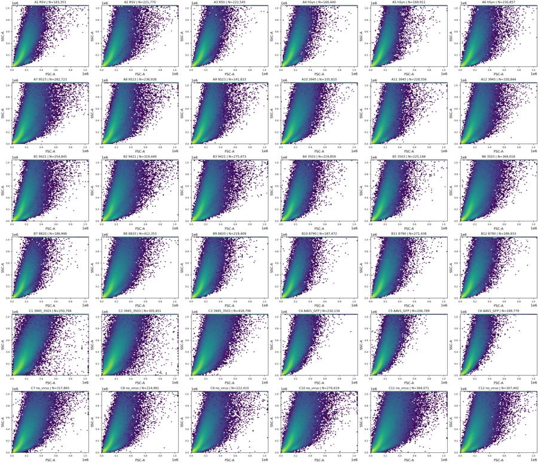
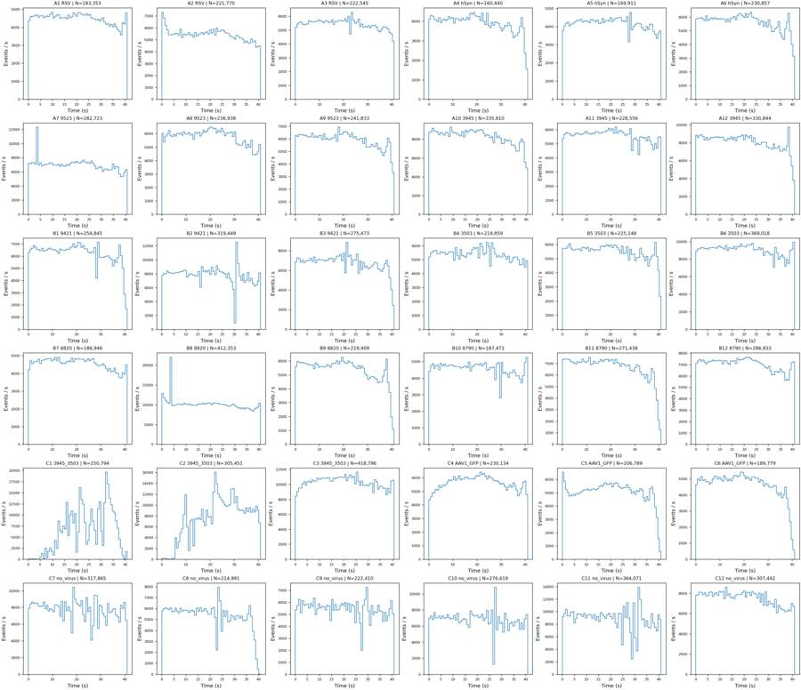
tool call · exec
text(await tools.write_stdin({session_id:99928,chars:"","yield_time_ms":1000,"max_output_tokens":1500}));
const r=await Promise.allSettled([
tools.view_image({path:"/task/outputs/plots/initial_controls.png"}),
tools.view_image({path:"/task/outputs/plots/initial_fluorescence.png"})
]);for(const x of r){if(x.status==="fulfilled")image(x.value.image_url);else text(x);}
tool output
Script completed Wall time 0.1 seconds Output:
{"chunk_id":"d42ac7","wall_time_seconds":0.00000227,"exit_code":0,"original_token_count":0,"output":""}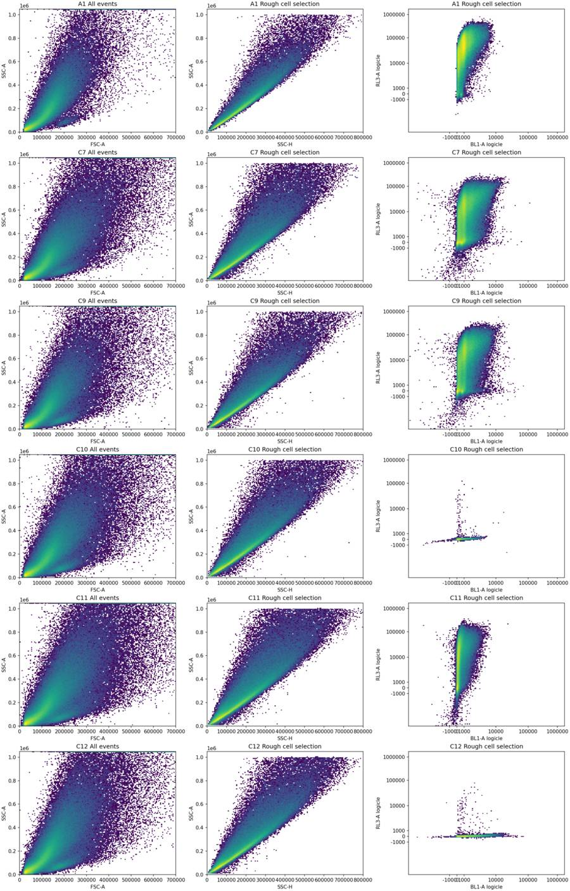
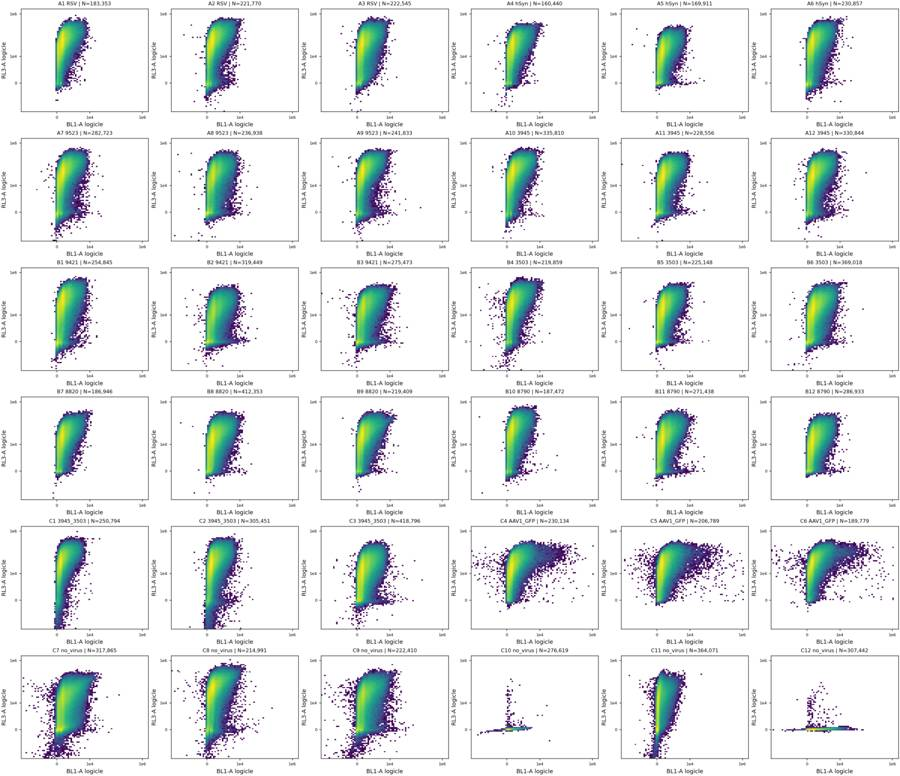
tool call · exec
text(await tools.apply_patch("*** Begin Patch\n*** Add File: /task/outputs/gate_plate.py\n+\"\"\"Reproducible FlowKit 1.2.3 gates; all coordinates shared by all wells.\"\"\"\n+from pathlib import Path\n+import json\n+import numpy as np\n+import pandas as pd\n+import flowkit as fk\n+\n+ROOT = Path('/task')\n+OUT = ROOT / 'outputs'\n+POPULATIONS = ['Cells', 'Single_Cells', 'Live', 'Caspase_pos', 'Late_apoptosis']\n+PARENTS = ['All_events', 'Cells', 'Single_Cells', 'Live', 'Single_Cells']\n+LOGICLE = dict(param_t=1048576, param_w=0.5, param_m=4.5, param_a=0)\n+CELLS = [[45000,18000], [150000,18000], [800000,160000],\n+ [1000000,600000], [1000000,1000000], [140000,1000000],\n+ [45000,280000]]\n+SINGLE_CELLS = [[10000,5000], [850000,760000], [850000,1000000],\n+ [620000,1000000], [10000,22000]]\n+LIVE_MAX = 1500.0\n+DEAD_MIN = 10000.0\n+CASPASE_MIN = 3000.0\n+\n+def build_strategy():\n+ strategy = fk.GatingStrategy()\n+ transform = fk.transforms.LogicleTransform(**LOGICLE)\n+ strategy.add_transform('Fluorescence_logicle', transform)\n+ def dim(channel, transform_ref=None, low=None, high=None):\n+ return fk.Dimension(channel, compensation_ref='uncompensated',\n+ transformation_ref=transform_ref, range_min=low, range_max=high)\n+ def fl_dim(channel, low=None, high=None):\n+ lo = None if low is None else float(transform.apply(np.array([low]))[0])\n+ hi = None if high is None else float(transform.apply(np.array([high]))[0])\n+ return dim(channel, 'Fluorescence_logicle', lo, hi)\n+ strategy.add_gate(fk.gates.PolygonGate('Cells', [dim('FSC-A'),dim('SSC-A')], CELLS), ('root',))\n+ strategy.add_gate(fk.gates.PolygonGate('Single_Cells', [dim('SSC-H'),dim('SSC-A')], SINGLE_CELLS), ('root','Cells'))\n+ strategy.add_gate(fk.gates.RectangleGate('Live',[fl_dim('BL1-A'),fl_dim('RL3-A',high=LIVE_MAX)]), ('root','Cells','Single_Cells'))\n+ strategy.add_gate(fk.gates.RectangleGate('Caspase_pos',[fl_dim('BL1-A',low=CASPASE_MIN),fl_dim('RL3-A',high=LIVE_MAX)]), ('root','Cells','Single_Cells','Live'))\n+ late = transform.apply(np.array([[CASPASE_MIN,DEAD_MIN], [2097152,DEAD_MIN], [2097152,2097152], [CASPASE_MIN,2097152]]))\n+ strategy.add_gate(fk.gates.PolygonGate('Late_apoptosis',[fl_dim('BL1-A'),fl_dim('RL3-A')],late.tolist()), ('root','Cells','Single_Cells'))\n+ return strategy\n+\n+def save_strategy():\n+ strategy=build_strategy()\n+ with (OUT/'gates.xml').open('wb') as handle:\n+ fk.export_gatingml(strategy,handle)\n+ reloaded = fk.parse_gating_xml(str(OUT/'gates.xml'))\n+ assert len(reloaded.get_gate_ids())==5\n+ print('Saved and reloaded gates.xml:',reloaded.get_gate_ids(),flush=True)\n+ return reloaded\n+\n+def main():\n+ strategy=save_strategy()\n+ rows=[]\n+ for row in pd.read_csv(ROOT/'inputs/plate_layout.csv').itertuples(index=False):\n+ sample=fk.Sample(str(ROOT/'inputs/raw'/row.file))\n+ result=strategy.gate_sample(sample)\n+ counts={'All_events':sample.event_count}\n+ for pop,parent in zip(POPULATIONS,PARENTS):\n+ count=int(result.get_gate_count(pop))\n+ counts[pop]=count\n+ rows.append(dict(file=row.file,well=row.well,population=pop,count=count,\n+ parent_population=parent,pct_of_parent=100*count/counts[parent] if counts[parent] else 0.0))\n+ print(row.well,counts,flush=True)\n+ pd.DataFrame(rows).to_csv(OUT/'counts.csv',index=False)\n+\n+if __name__=='__main__':\n+ main()\n*** End Patch"));
text(await tools.exec_command({cmd:"python /task/outputs/gate_plate.py","yield_time_ms":1000,"max_output_tokens":1500}));
tool output
Script completed
Wall time 1.2 seconds
Output:
{}
{"chunk_id":"22722b","wall_time_seconds":1.00094216,"session_id":94492,"original_token_count":94,"output":"Saved and reloaded gates.xml: [('Cells', ('root',)), ('Single_Cells', ('root', 'Cells')), ('Live', ('root', 'Cells', 'Single_Cells')), ('Caspase_pos', ('root', 'Cells', 'Single_Cells', 'Live')), ('Late_apoptosis', ('root', 'Cells', 'Single_Cells'))]\nA1 {'All_events': 183353, 'Cells': 139566, 'Single_Cells': 128831, 'Live': 4911, 'Caspase_pos': 5, 'Late_apoptosis': 3062}\n"}13
agent
An initial `gates.xml` is saved and reloads successfully. C1 and C2 show pronounced flow instability; several other wells have falling event rates near the end. I’ll check those tails and refine the fluorescence boundaries using C10–C12. C4–C6 will need an interpretation flag because GFP and CellEvent share BL1-A.
tool call · exec
text(await tools.apply_patch("*** Begin Patch\n*** Add File: /task/outputs/review_gates.py\n+\"\"\"Gate overlays and parent-restricted control distributions.\"\"\"\n+from pathlib import Path\n+import numpy as np\n+import pandas as pd\n+import flowkit as fk\n+import matplotlib\n+matplotlib.use('Agg')\n+import matplotlib.pyplot as plt\n+from matplotlib.colors import LogNorm\n+from matplotlib.patches import Polygon, Rectangle\n+from gate_plate import ROOT, OUT, LOGICLE, CELLS, SINGLE_CELLS, LIVE_MAX, DEAD_MIN, CASPASE_MIN\n+\n+gs=fk.parse_gating_xml(str(OUT/'gates.xml'))\n+tr=fk.transforms.LogicleTransform(**LOGICLE)\n+def tx(a):return tr.apply(np.array(a,dtype=float))\n+tick_raw=np.array([-1000,0,100,1000,10000,100000,1000000])\n+tt=tx(tick_raw)\n+control_wells=['C10','C11','C12','C7','C8','C9','C4','C5','C6']\n+fig,axs=plt.subplots(9,4,figsize=(22,32),constrained_layout=True)\n+hist,ha=plt.subplots(2,2,figsize=(15,10),constrained_layout=True)\n+scatter,sc=plt.subplots(2,3,figsize=(18,11),constrained_layout=True)\n+summary=[]\n+time_rows=[]\n+for row in pd.read_csv(ROOT/'inputs/plate_layout.csv').itertuples(index=False):\n+ s=fk.Sample(str(ROOT/'inputs/raw'/row.file))\n+ e=s.get_events(source='raw')\n+ d={c:e[:,i] for i,c in enumerate(s.pnn_labels)}\n+ result=gs.gate_sample(s)\n+ m={p:result.get_gate_membership(p) for p in ['Cells','Single_Cells','Live','Caspase_pos','Late_apoptosis']}\n+ t=d['Time']; f=d['FSC-A']; a=d['SSC-A']; h=d['SSC-H']; b=d['BL1-A']; r=d['RL3-A']\n+ ss=m['Single_Cells']\n+ rec={'well':row.well,'single_n':int(ss.sum()),'cell_n':int(m['Cells'].sum()),'live_n':int(m['Live'].sum())}\n+ for ch in ['BL1-A','RL3-A']:\n+ for q in [.001,.01,.1,.5,.9,.95,.99,.995,.999]:\n+ rec[f'{ch}_singlet_q{q}']=np.quantile(d[ch][ss],q)\n+ rec[ch+'_singlet_saturated_pct']=100*np.mean(d[ch][ss]>=1048575)\n+ rec[ch+'_singlet_negative_pct']=100*np.mean(d[ch][ss]<0)\n+ for v in [500,1000,1500,2000,3000,4000,5000,10000,20000]:\n+ rec[f'BL1_singlet_pct_gt_{v}']=100*np.mean(b[ss]>=v)\n+ rec[f'RL3_singlet_pct_gt_{v}']=100*np.mean(r[ss]>=v)\n+ summary.append(rec)\n+ edges=np.linspace(t.min(),t.max(),83)\n+ for j,(lo,hi) in enumerate(zip(edges[:-1],edges[1:])):\n+ ind=(t>=lo)&(t<hi if j<len(edges)-2 else t<=hi)\n+ sing=ss&ind; live=m['Live']&ind\n+ time_rows.append({'well':row.well,'time_lo':lo,'time_hi':hi,'n':int(ind.sum()),'rate':ind.sum()/(hi-lo),\n+ 'cells_pct':100*np.mean(m['Cells'][ind]),'singlets_pct_all':100*np.mean(ss[ind]),\n+ 'fsc_median':np.median(f[ind]) if ind.any() else np.nan,\n+ 'ssc_median':np.median(a[ind]) if ind.any() else np.nan,\n+ 'live_pct_singlets':100*np.mean(m['Live'][sing]) if sing.any() else np.nan,\n+ 'caspase_pct_live':100*np.mean(m['Caspase_pos'][live]) if live.any() else np.nan,\n+ 'BL1_median_singlets':np.median(b[sing]) if sing.any() else np.nan,\n+ 'RL3_median_singlets':np.median(r[sing]) if sing.any() else np.nan})\n+ if row.well in control_wells:\n+ j=control_wells.index(row.well)\n+ for k,(xx,yy,mask,ran,xl,yl) in enumerate([\n+ (f,a,np.ones(len(e),bool),[[0,800000],[0,1048576]],'FSC-A','SSC-A'),\n+ (h,a,m['Cells'],[[0,850000],[0,1048576]],'SSC-H','SSC-A'),\n+ (tx(b),tx(r),ss,[[-.15,1.03],[-.15,1.03]],'BL1-A logicle','RL3-A logicle'),\n+ (tx(b),tx(r),ss,[[tx([-2000])[0],tx([30000])[0]],[tx([-1000])[0],tx([5000])[0]]],'BL1-A logicle (zoom)','RL3-A logicle (zoom)')]):\n+ ax=axs[j,k]\n+ ax.hist2d(xx[mask],yy[mask],bins=130,range=ran,norm=LogNorm(),cmap='viridis')\n+ ax.set(xlabel=xl,ylabel=yl,title=f'{row.well} | {row.control_type} | parent N={mask.sum():,}')\n+ if k<2:\n+ ax.add_patch(Polygon(CELLS if k==0 else SINGLE_CELLS,fill=False,edgecolor='red',lw=1.3))\n+ else:\n+ ax.axhline(tx([LIVE_MAX])[0],c='lime',lw=1.2)\n+ ax.axhline(tx([DEAD_MIN])[0],c='red',lw=1.2)\n+ ax.axvline(tx([CASPASE_MIN])[0],c='red',lw=1.2)\n+ ax.set(xticks=tt,xticklabels=[f'{v:g}' for v in tick_raw],yticks=tt,yticklabels=[f'{v:g}' for v in tick_raw],xlim=ran[0],ylim=ran[1])\n+ if row.well in ['C10','C11','C12','C7','C9']:\n+ for k,ch in enumerate(['BL1-A','RL3-A']):\n+ v=tx(d[ch][ss]); edges=np.linspace(-.1,1.0,300)\n+ for i in [0,1]:\n+ ha[i,k].hist(v,bins=edges,histtype='step',density=True,label=row.well,linewidth=1.3)\n+ ha[i,k].set(xlabel=ch+' logicle',ylabel='Probability density',xticks=tt,xticklabels=[f'{v:g}' for v in tick_raw],xlim=(-.1,1))\n+ if row.well=='C10':\n+ for j,mask in enumerate([np.ones(len(e),bool),ss,m['Live']]):\n+ sc[0,j].hist2d(f[mask],a[mask],bins=150,range=[[0,250000],[0,350000]],norm=LogNorm(),cmap='viridis')\n+ sc[0,j].add_patch(Polygon(CELLS,fill=False,edgecolor='red'))\n+ sc[0,j].set(xlim=(0,250000),ylim=(0,350000),xlabel='FSC-A',ylabel='SSC-A',title=['All events C10','Singlets C10','Live C10'][j])\n+ sc[1,0].hist2d(h[m['Cells']],a[m['Cells']],bins=180,range=[[0,500000],[0,700000]],norm=LogNorm(),cmap='viridis')\n+ sc[1,0].add_patch(Polygon(SINGLE_CELLS,fill=False,edgecolor='red'))\n+ sc[1,0].set(xlim=(0,500000),ylim=(0,700000),xlabel='SSC-H',ylabel='SSC-A',title='C10 Cells')\n+ ratio=a[m['Cells']]/h[m['Cells']]\n+ sc[1,1].hist(ratio,bins=np.linspace(.5,4,240))\n+ sc[1,1].set(xlabel='SSC-A / SSC-H',ylabel='Events',title='C10 Cells ratio')\n+ sc[1,2].hist(f,bins=np.linspace(0,350000,180),histtype='step',label='All')\n+ sc[1,2].hist(f[ss],bins=np.linspace(0,350000,180),histtype='step',label='Singlets')\n+ sc[1,2].set(xlabel='FSC-A',ylabel='Events',title='C10 FSC');sc[1,2].l
… [889 more characters not shown]tool output
Script completed
Wall time 1.2 seconds
Output:
{}
{"chunk_id":"7bc2fa","wall_time_seconds":1.00117438,"session_id":83888,"original_token_count":0,"output":""}
{"chunk_id":"6f3d66","wall_time_seconds":0.0000015,"exit_code":0,"original_token_count":1097,"output":"A2 {'All_events': 221770, 'Cells': 167558, 'Single_Cells': 150670, 'Live': 11334, 'Caspase_pos': 37, 'Late_apoptosis': 4305}\nA3 {'All_events': 222545, 'Cells': 174135, 'Single_Cells': 160560, 'Live': 15449, 'Caspase_pos': 24, 'Late_apoptosis': 4636}\nA4 {'All_events': 160440, 'Cells': 125659, 'Single_Cells': 115721, 'Live': 8267, 'Caspase_pos': 11, 'Late_apoptosis': 2964}\nA5 {'All_events': 169911, 'Cells': 130214, 'Single_Cells': 120722, 'Live': 14027, 'Caspase_pos': 44, 'Late_apoptosis': 2682}\nA6 {'All_events': 230857, 'Cells': 179057, 'Single_Cells': 163803, 'Live': 17531, 'Caspase_pos': 41, 'Late_apoptosis': 4787}\nA7 {'All_events': 282723, 'Cells': 211773, 'Single_Cells': 187017, 'Live': 19420, 'Caspase_pos': 90, 'Late_apoptosis': 5365}\nA8 {'All_events': 236938, 'Cells': 179841, 'Single_Cells': 161606, 'Live': 25631, 'Caspase_pos': 147, 'Late_apoptosis': 5298}\nA9 {'All_events': 241833, 'Cells': 187188, 'Single_Cells': 169392, 'Live': 14432, 'Caspase_pos': 101, 'Late_apoptosis': 4956}\nA10 {'All_events': 335810, 'Cells': 254922, 'Single_Cells': 227922, 'Live': 15488, 'Caspase_pos': 26, 'Late_apoptosis': 7430}\nA11 {'All_events': 228556, 'Cells': 169082, 'Single_Cells': 154825, 'Live': 17461, 'Caspase_pos': 104, 'Late_apoptosis': 4969}\nA12 {'All_events': 330844, 'Cells': 246293, 'Single_Cells': 220869, 'Live': 20365, 'Caspase_pos': 129, 'Late_apoptosis': 7234}\nB1 {'All_events': 254845, 'Cells': 188451, 'Single_Cells': 169314, 'Live': 22276, 'Caspase_pos': 70, 'Late_apoptosis': 4204}\nB2 {'All_events': 319449, 'Cells': 234506, 'Single_Cells': 206585, 'Live': 44656, 'Caspase_pos': 339, 'Late_apoptosis': 6434}\nB3 {'All_events': 275473, 'Cells': 207296, 'Single_Cells': 184571, 'Live': 31998, 'Caspase_pos': 261, 'Late_apoptosis': 6243}\nB4 {'All_events': 219859, 'Cells': 163020, 'Single_Cells': 148779, 'Live': 11816, 'Caspase_pos': 22, 'Late_apoptosis': 3618}\nB5 {'All_events': 225148, 'Cells': 166571, 'Single_Cells': 152665, 'Live': 17521, 'Caspase_pos': 73, 'Late_apoptosis': 3937}\nB6 {'All_events': 369018, 'Cells': 273938, 'Single_Cells': 243182, 'Live': 33895, 'Caspase_pos': 184, 'Late_apoptosis': 9071}\nB7 {'All_events': 186946, 'Cells': 141660, 'Single_Cells': 131532, 'Live': 11874, 'Caspase_pos': 8, 'Late_apoptosis': 3418}\nB8 {'All_events': 412353, 'Cells': 311045, 'Single_Cells': 275218, 'Live': 33151, 'Caspase_pos': 91, 'Late_apoptosis': 7779}\nB9 {'All_events': 219409, 'Cells': 165332, 'Single_Cells': 151365, 'Live': 13179, 'Caspase_pos': 29, 'Late_apoptosis': 4702}\nB10 {'All_events': 187472, 'Cells': 140485, 'Single_Cells': 130967, 'Live': 9633, 'Caspase_pos': 19, 'Late_apoptosis': 2854}\nB11 {'All_events': 271438, 'Cells': 206923, 'Single_Cells': 188867, 'Live': 20210, 'Caspase_pos': 153, 'Late_apoptosis': 5772}\nB12 {'All_events': 286933, 'Cells': 218682, 'Single_Cells': 199684, 'Live': 23188, 'Caspase_pos': 95, 'Late_apoptosis': 5627}\nC1 {'All_events': 250794, 'Cells': 193897, 'Single_Cells': 167294, 'Live': 6318, 'Caspase_pos': 5, 'Late_apoptosis': 1940}\nC2 {'All_events': 305451, 'Cells': 237737, 'Single_Cells': 207620, 'Live': 16190, 'Caspase_pos': 136, 'Late_apoptosis': 3746}\nC3 {'All_events': 418796, 'Cells': 315123, 'Single_Cells': 273260, 'Live': 41465, 'Caspase_pos': 238, 'Late_apoptosis': 6959}\nC4 {'All_events': 230134, 'Cells': 177625, 'Single_Cells': 163783, 'Live': 8296, 'Caspase_pos': 27, 'Late_apoptosis': 5634}\nC5 {'All_events': 206789, 'Cells': 159675, 'Single_Cells': 147218, 'Live': 9508, 'Caspase_pos': 28, 'Late_apoptosis': 4520}\nC6 {'All_events': 189779, 'Cells': 146003, 'Single_Cells': 136265, 'Live': 5196, 'Caspase_pos': 23, 'Late_apoptosis': 5129}\nC7 {'All_events': 317865, 'Cells': 233849, 'Single_Cells': 201476, 'Live': 53234, 'Caspase_pos': 635, 'Late_apoptosis': 7521}\nC8 {'All_events': 214991, 'Cells': 155255, 'Single_Cells': 138695, 'Live': 15815, 'Caspase_pos': 185, 'Late_apoptosis': 4616}\nC9 {'All_events': 222410, 'Cells': 161946, 'Single_Cells': 142146, 'Live': 30647, 'Caspase_pos': 396, 'Late_apoptosis': 5812}\nC10 {'All_events': 276619, 'Cells': 206390, 'Single_Cells': 179633, 'Live': 179580, 'Caspase_pos': 319, 'Late_apoptosis': 0}\nC11 {'All_events': 364071, 'Cells': 262424, 'Single_Cells': 220928, 'Live': 53560, 'Caspase_pos': 3, 'Late_apoptosis': 375}\nC12 {'All_events': 307442, 'Cells': 227137, 'Single_Cells': 198155, 'Live': 198070, 'Caspase_pos': 10164, 'Late_apoptosis': 2}\n"}tool call · exec
const r=await Promise.allSettled([
tools.view_image({path:"/task/outputs/plots/initial_fsc_time.png"}),
tools.view_image({path:"/task/outputs/plots/initial_fluor_time.png"}),
tools.exec_command({cmd:"python - <<'PY'\nimport pandas as pd\nq=pd.read_csv('/task/outputs/raw_qc_metrics.csv')\nprint(q[['well','n','FSC-A_floor_pct','SSC-A_floor_pct','nonfinite','time_reversals']].to_string(index=False))\nPY","max_output_tokens":2500})
]);for(const x of r){if(x.status==='fulfilled'&&x.value.image_url)image(x.value.image_url);else text(x);}
tool output
Script completed Wall time 0.4 seconds Output:
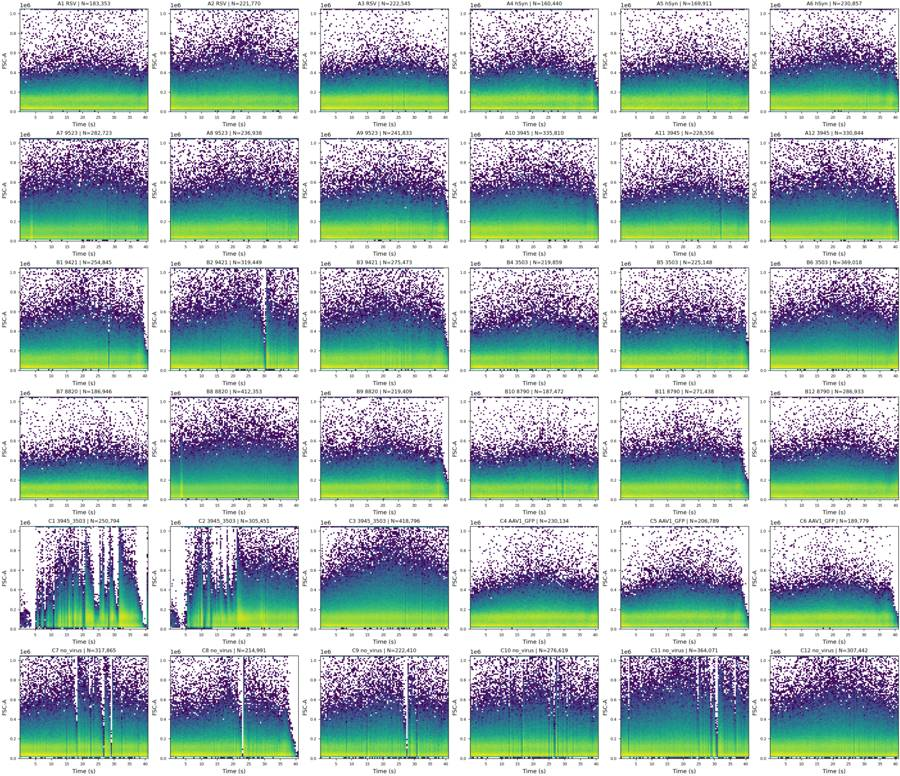
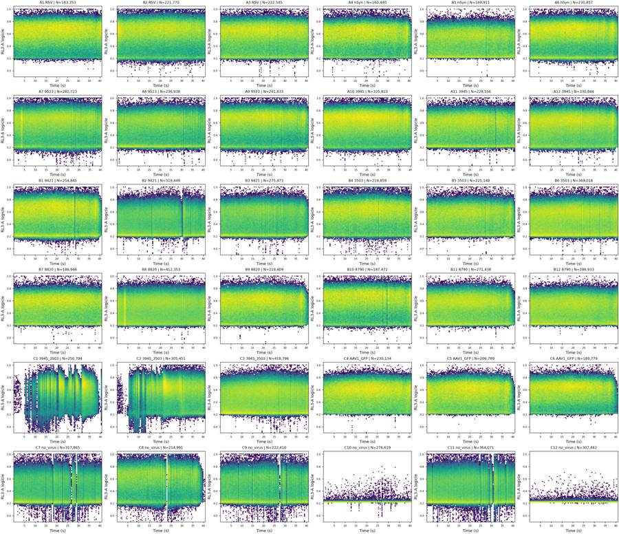
{"status":"fulfilled","value":{"chunk_id":"89f635","wall_time_seconds":0.200898954,"exit_code":0,"original_token_count":676,"output":"well n FSC-A_floor_pct SSC-A_floor_pct nonfinite time_reversals\n A1 183353 0.000000 0.000000 0 0\n A2 221770 0.000000 0.007215 0 0\n A3 222545 0.001348 0.012132 0 0\n A4 160440 0.000000 0.008103 0 0\n A5 169911 0.000000 0.002943 0 0\n A6 230857 0.000000 0.003465 0 0\n A7 282723 0.000000 0.016270 0 1\n A8 236938 0.000000 0.012239 0 0\n A9 241833 0.000000 0.009097 0 0\n A10 335810 0.000000 0.004765 0 0\n A11 228556 0.000000 0.007438 0 0\n A12 330844 0.000000 0.011486 0 0\n B1 254845 0.000000 0.009417 0 0\n B2 319449 0.000000 0.022226 0 0\n B3 275473 0.000000 0.031945 0 0\n B4 219859 0.000000 0.024106 0 0\n B5 225148 0.000000 0.005330 0 0\n B6 369018 0.000000 0.007859 0 0\n B7 186946 0.000000 0.002675 0 0\n B8 412353 0.000000 0.001698 0 1\n B9 219409 0.000000 0.006837 0 0\n B10 187472 0.000000 0.012802 0 0\n B11 271438 0.000000 0.001474 0 0\n B12 286933 0.000000 0.001743 0 0\n C1 250794 0.053829 0.695790 0 0\n C2 305451 0.032738 0.476345 0 0\n C3 418796 0.000000 0.029609 0 0\n C4 230134 0.000000 0.004345 0 0\n C5 206789 0.000000 0.000000 0 0\n C6 189779 0.000000 0.001054 0 0\n C7 317865 0.001573 0.208265 0 0\n C8 214991 0.001861 0.106516 0 0\n C9 222410 0.000450 0.218965 0 0\n C10 276619 0.001085 0.150387 0 0\n C11 364071 0.000824 0.203532 0 0\n C12 307442 0.000000 0.044561 0 0\n"}}tool call · exec
text(await tools.write_stdin({session_id:83888,chars:"","yield_time_ms":1000,"max_output_tokens":2000}));
text(await tools.exec_command({cmd:"python - <<'PY'\nimport pandas as pd\nfrom pathlib import Path\np=Path('/task/outputs/gated_qc_metrics.csv')\nif p.exists():\n q=pd.read_csv(p)\n cols=['well','single_n','live_n','BL1-A_singlet_q0.99','BL1-A_singlet_q0.995','BL1-A_singlet_q0.999','RL3-A_singlet_q0.99','BL1_singlet_pct_gt_1000','BL1_singlet_pct_gt_2000','BL1_singlet_pct_gt_3000','RL3_singlet_pct_gt_1500']\n print(q[cols].round(3).to_string(index=False))\nPY","max_output_tokens":5000}));
tool output
Script completed
Wall time 4.9 seconds
Output:
{"chunk_id":"37c96e","wall_time_seconds":4.653184908,"exit_code":0,"original_token_count":111,"output":"A1\nA2\nA3\nA4\nA5\nA6\nA7\nA8\nA9\nA10\nA11\nA12\nB1\nB2\nB3\nB4\nB5\nB6\nB7\nB8\nB9\nB10\nB11\nB12\n/usr/local/lib/python3.12/site-packages/numpy/core/fromnumeric.py:3504: RuntimeWarning: Mean of empty slice.\n return _methods._mean(a, axis=axis, dtype=dtype,\n/usr/local/lib/python3.12/site-packages/numpy/core/_methods.py:129: RuntimeWarning: invalid value encountered in scalar divide\n ret = ret.dtype.type(ret / rcount)\nC1\nC2\nC3\nC4\nC5\nC6\nC7\nC8\nC9\nC10\nC11\nC12\n"}
{"chunk_id":"c8ba23","wall_time_seconds":0.115654473,"exit_code":0,"original_token_count":1934,"output":"well single_n live_n BL1-A_singlet_q0.99 BL1-A_singlet_q0.995 BL1-A_singlet_q0.999 RL3-A_singlet_q0.99 BL1_singlet_pct_gt_1000 BL1_singlet_pct_gt_2000 BL1_singlet_pct_gt_3000 RL3_singlet_pct_gt_1500\n A1 128831 4911 3808.00 4441.000 5733.170 224181.40 35.558 8.749 2.419 96.188\n A2 150670 11334 3972.00 4653.965 6112.662 247714.55 35.697 9.689 2.909 92.478\n A3 160560 15449 3998.41 4634.410 6079.174 201968.48 36.659 10.716 3.141 90.378\n A4 115721 8267 3917.60 4622.000 6179.640 148339.20 37.595 9.443 2.665 92.856\n A5 120722 14027 3811.79 4513.000 5955.674 95261.90 34.861 8.607 2.425 88.381\n A6 163803 17531 4038.00 4667.000 6286.396 200588.50 37.681 10.350 3.073 89.298\n A7 187017 19420 4063.84 4743.000 6177.920 191574.36 38.753 10.148 2.979 89.616\n A8 161606 25631 4373.00 5099.975 6598.975 153567.30 42.817 11.876 3.661 84.140\n A9 169392 14432 4052.00 4718.045 6378.654 200732.18 38.829 10.191 3.033 91.480\n A10 227922 15488 4143.00 4844.395 6209.158 189939.77 39.331 10.863 3.333 93.205\n A11 154825 17461 4271.00 4958.880 6541.056 148633.88 43.188 11.447 3.421 88.722\n A12 220869 20365 4203.00 4872.000 6464.792 158507.68 40.226 11.044 3.424 90.780\n B1 169314 22276 3956.87 4655.000 6031.000 202790.22 37.668 9.540 2.696 86.843\n B2 206585 44656 4294.16 5004.160 6774.416 77405.32 44.190 12.185 3.711 78.384\n B3 184571 31998 4387.30 5103.750 6780.430 102489.80 45.438 12.702 3.860 82.664\n B4 148779 11816 3914.22 4601.110 6114.222 179197.22 32.646 8.380 2.509 92.058\n B5 152665 17521 3997.00 4693.680 6218.360 109322.04 39.071 9.896 2.780 88.523\n B6 243182 33895 4430.00 5146.000 6652.819 106766.95 44.963 13.187 4.195 86.062\n B7 131532 11874 3922.69 4569.035 6046.911 116438.00 36.482 9.582 2.735 90.973\n B8 275218 33151 4097.00 4804.915 6266.566 97565.77 37.375 10.266 3.133 87.955\n B9 151365 13179 4175.36 4919.000 6432.904 125284.48 35.646 10.355 3.279 91.293\n B10 130967 9633 3739.02 4377.510 5690.578 225519.74 32.536 8.059 2.308 92.645\n B11 188867 20210 4161.00 4827.670 6390.268 128904.68 40.580 11.115 3.344 89.299\n B12 199684 23188 4079.00 4761.585 6207.634 92944.17 38.271 10.597 3.181 88.388\n C1 1
… [2,513 more characters not shown]tool call · exec
const r=await Promise.allSettled([
tools.view_image({path:"/task/outputs/plots/control_histograms.png"}),
tools.view_image({path:"/task/outputs/plots/scatter_gate_detail.png"})
]);for(const x of r){if(x.status==='fulfilled')image(x.value.image_url);else text(x);}
tool output
Script completed Wall time 0.0 seconds Output:
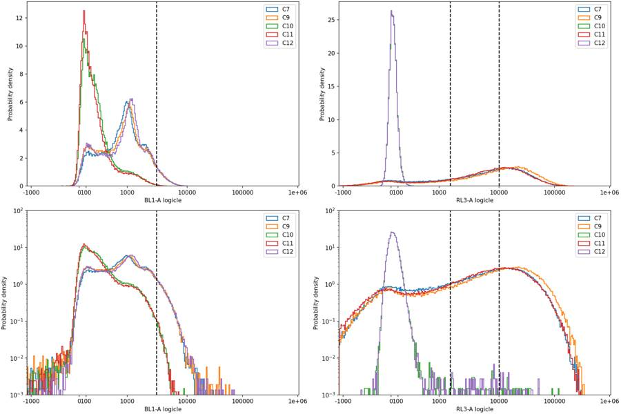
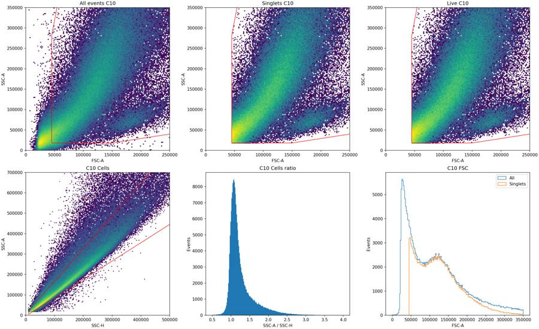
17
agent
The CellEvent-only control is shifted above the unstained control, but the BL1-A distributions overlap substantially. I’ll use a conservative cutoff and document that limitation. The scatter plots support a shared singlet gate across the plate; the main quality concerns are acquisition instability and GFP interference.
tool call · exec
text(await tools.exec_command({cmd:"python - <<'PY'\nimport flowkit as fk,numpy as np,pandas as pd\nfor w in ['A7','B8']:\n s=fk.Sample('/task/inputs/raw/Caspase_KO_RNAswap-rep2_caspase_Group_'+w+'.fcs'); x=s.get_events(source='raw'); t=x[:,0]\n for k in np.flatnonzero(np.diff(t)<0):\n print(w,'time reversal at event',k,'from',t[k],'to',t[k+1],'jump',t[k+1]-t[k])\n print(x[k-2:k+4,:5])\nq=pd.read_csv('/task/outputs/time_bin_metrics.csv')\nrows=[]\nfor w,g in q.groupby('well',sort=False):\n middle=g[(g.time_lo>=5)&(g.time_hi<=30)]\n baseline=middle.rate.median(); end=g.iloc[-4:]; start=g.iloc[:10]\n row={'well':w,'baseline':baseline,'min_interior_frac':g[(g.time_lo>3)&(g.time_hi<37)].rate.min()/baseline,'last_2s_frac':end.rate.mean()/baseline,'last_0.5s_frac':g.iloc[-1].rate/baseline,\n 'interior_bins_below_25pct':((g.rate<.25*baseline)&(g.time_lo>3)&(g.time_hi<37)).sum(),'end_fsc_vs_mid':end.fsc_median.mean()/middle.fsc_median.median(),'end_cell_pct':end.cells_pct.mean(),'middle_cell_pct':middle.cells_pct.median(),'start_5s_frac':start.rate.mean()/baseline}\n rows.append(row)\nprint(pd.DataFrame(rows).round(3).to_string(index=False))\nPY","max_output_tokens":5000}));
text(await tools.view_image({path:"/task/outputs/plots/control_gate_review.png"}).then(x=>{image(x.image_url);return "viewed";}));
tool output
Script completed Wall time 1.3 seconds Output:
{"chunk_id":"c52c7b","wall_time_seconds":1.001951127,"exit_code":0,"original_token_count":1665,"output":"A7 time reversal at event 3637 from 3.96 to 0.013000000000000001 jump -3.947\n[[ 3.96000e+00 1.09880e+05 1.00355e+05 1.15500e+03 2.45960e+04]\n [ 3.96000e+00 1.16988e+05 1.19795e+05 7.00000e+02 1.86560e+04]\n [ 3.96000e+00 2.85120e+04 2.77540e+04 -8.00000e+00 6.80000e+01]\n [ 1.30000e-02 2.11140e+04 3.62700e+03 2.29000e+02 3.19700e+03]\n [ 1.30000e-02 5.03960e+04 4.06860e+04 1.33000e+02 5.55400e+03]\n [ 1.30000e-02 1.14059e+05 1.41371e+05 1.38800e+03 8.37500e+03]]\nB8 time reversal at event 8109 from 3.9410000000000003 to 0.013000000000000001 jump -3.9280000000000004\n[[ 3.94100e+00 1.88171e+05 2.16767e+05 1.30100e+03 1.81580e+04]\n [ 3.94100e+00 3.15130e+04 2.13690e+04 1.12000e+02 7.53100e+03]\n [ 3.94100e+00 4.42940e+04 1.82800e+04 2.15000e+02 5.72000e+02]\n [ 1.30000e-02 1.73406e+05 3.34134e+05 2.41600e+03 6.11900e+03]\n [ 1.30000e-02 2.61820e+04 2.63580e+04 -4.60000e+01 1.28170e+04]\n [ 1.30000e-02 1.89647e+05 2.76996e+05 1.38800e+03 3.31160e+04]]\nwell baseline min_interior_frac last_2s_frac last_0.5s_frac interior_bins_below_25pct end_fsc_vs_mid end_cell_pct middle_cell_pct start_5s_frac\n A1 4615.622 0.867 0.956 1.060 0 0.927 76.832 76.712 0.994\n A2 5558.676 0.803 0.792 0.821 0 0.885 73.526 75.828 1.087\n A3 5634.872 0.852 0.817 0.774 0 0.900 77.802 78.779 0.965\n A4 4103.494 0.753 0.614 0.348 0 0.811 74.550 78.817 1.007\n A5 4317.903 0.533 0.828 0.886 0 0.882 73.982 77.098 0.943\n A6 5860.294 0.728 0.686 0.516 0 0.891 75.232 78.188 1.004\n A7 7090.779 0.797 0.826 0.904 0 0.877 72.578 75.331 1.110\n A8 6038.162 0.743 0.789 0.897 0 0.865 73.520 76.507 0.973\n A9 6176.600 0.678 0.696 0.522 0 0.883 74.840 77.921 1.018\n A10 8622.868 0.758 0.697 0.549 0 0.866 74.258 76.510 1.021\n A11 5769.443 0.576 0.904 0.997 0 0.878 72.335 74.487 0.975\n A12 8511.875 0.803 0.614 0.413 0 0.821 71.374 75.256 1.019\n B1 6538.103 0.758 0.477 0.234 0 0.659 65.438 74.670 1.007\n B2 8205.419 0.106 0.883 0.971 1 0.889 72.351 74.010 0.982\n B3 7168.127 0.472 0.532 0.295 0 0.721 69.141 76.126 0.974\n B4 5508.016 0.717 0.880 0.896 0 0.910 73.739 74.216 0.995\n B5 5710.646 0.742 0.679 0.370 0 0.805 70.227 74.578 1.016\n B6 9363.113 0.749 1.002 1.078 0 0.921 73.735 74.790 0.980\n B7 4743.620 0.861 0.875 0.986 0 0.942 74.651 75.774 0.972\n B8 10070.423 0.872 0.959 1.012 0 0.957 76.104 75.924 1.245\n B9 5690.217 0.775 0.383 0.181 0 0.610 62.956 76.496 1.026\n B10 4704.918 0.562 1.016 1.036 0 0.899 73.911 75.479 0.993\n B11 7113.840 0.754 0.331 0.162 0 0.596 61.804 76.871 1.020\n B12 7324.120 0.827 0.955 0.988 0 0.927 75.573 77.019 0.988\n C1 5913.724 0.000 0.140 0.398 13 0.543 33.043 73.859 0.009\n C2 8018.602 0.001 1.055 0.802 6 0.976 76.718 78.328 0.013\n C3 10744.758 0.689 0.928 0.990 0 0.896 74.411 75.772 0.892\n C4 5920.776 0.839 0.906 0.784 0 0.913 76.873 77.892 0.833\n C5 5309.951 0.803 0.327 0.086 0 0.585 62.565 78.104 0.993\n C6 5031.632 0.756 0.267 0.084 0 0.575 59.581 77.483 0.973\n C7 8115.617 0.010 0.942 0.810 2 0.941
… [818 more characters not shown]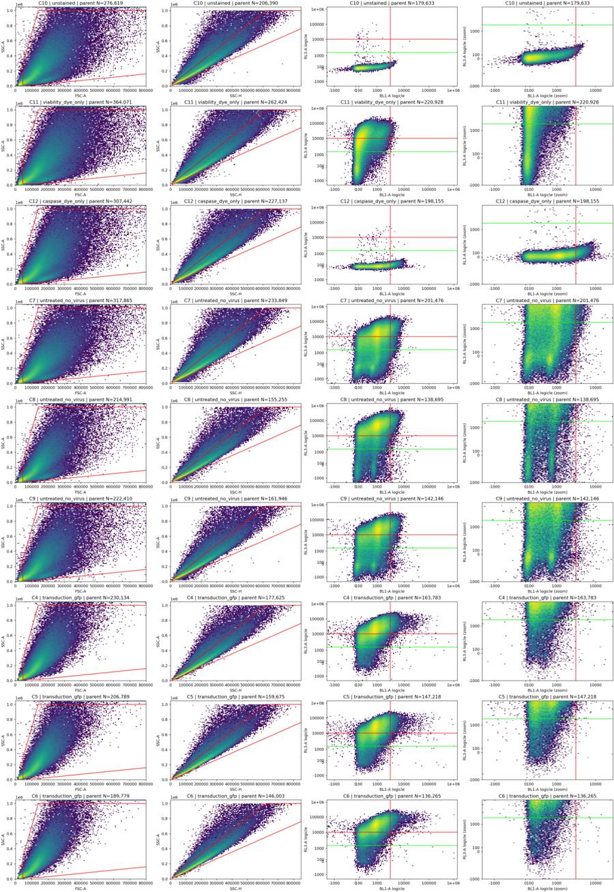
viewed
tool call · exec
text(await tools.exec_command({cmd:"python - <<'PY'\nimport pandas as pd\nq=pd.read_csv('/task/outputs/time_bin_metrics.csv')\nfor w in ['A4','A12','B1','B2','B3','B5','B9','B10','B11','C5','C6','C7','C8','C9','C10','C11']:\n g=q[q.well==w]; baseline=g[(g.time_lo>=5)&(g.time_hi<=30)]\n med=baseline.rate.median()\n end=g.iloc[-1]\n print(w, 'final rate/base',round(end.rate/med,3),'final FSC/base',round(end.fsc_median/baseline.fsc_median.median(),3),'last cell%',round(end.cells_pct,2),'interior worst times',g[(g.time_lo>3)&(g.time_hi<37)].nsmallest(2,'rate')[['time_lo','rate','fsc_median','cells_pct']].round(2).to_dict('records'))\nPY","max_output_tokens":4000}));
text(await tools.clock__curr_time({}));
tool output
Script completed
Wall time 0.3 seconds
Output:
{"chunk_id":"8d5672","wall_time_seconds":0.142749443,"exit_code":0,"original_token_count":980,"output":"A4 final rate/base 0.348 final FSC/base 0.648 last cell% 69.69 interior worst times [{'time_lo': 35.07, 'rate': 3091.1, 'fsc_median': 112592.5, 'cells_pct': 77.07}, {'time_lo': 36.07, 'rate': 3101.08, 'fsc_median': 104091.0, 'cells_pct': 74.31}]\nA12 final rate/base 0.413 final FSC/base 0.65 last cell% 67.68 interior worst times [{'time_lo': 34.92, 'rate': 6831.16, 'fsc_median': 98343.0, 'cells_pct': 73.84}, {'time_lo': 35.41, 'rate': 7001.64, 'fsc_median': 93151.0, 'cells_pct': 71.18}]\nB1 final rate/base 0.234 final FSC/base 0.451 last cell% 56.6 interior worst times [{'time_lo': 28.49, 'rate': 4955.87, 'fsc_median': 106061.0, 'cells_pct': 72.17}, {'time_lo': 34.99, 'rate': 5240.09, 'fsc_median': 98713.5, 'cells_pct': 70.28}]\nB2 final rate/base 0.971 final FSC/base 0.972 last cell% 74.56 interior worst times [{'time_lo': 29.91, 'rate': 871.12, 'fsc_median': 50238.5, 'cells_pct': 53.23}, {'time_lo': 15.96, 'rate': 4178.98, 'fsc_median': 112138.5, 'cells_pct': 71.23}]\nB3 final rate/base 0.295 final FSC/base 0.523 last cell% 62.43 interior worst times [{'time_lo': 25.93, 'rate': 3381.38, 'fsc_median': 117505.0, 'cells_pct': 73.47}, {'time_lo': 35.39, 'rate': 5651.02, 'fsc_median': 99718.5, 'cells_pct': 73.3}]\nB5 final rate/base 0.37 final FSC/base 0.63 last cell% 68.53 interior worst times [{'time_lo': 27.0, 'rate': 4239.96, 'fsc_median': 111712.0, 'cells_pct': 74.71}, {'time_lo': 36.0, 'rate': 4528.1, 'fsc_median': 93835.0, 'cells_pct': 71.32}]\nB9 final rate/base 0.181 final FSC/base 0.404 last cell% 48.93 interior worst times [{'time_lo': 34.97, 'rate': 4409.59, 'fsc_median': 91429.0, 'cells_pct': 71.12}, {'time_lo': 34.47, 'rate': 4431.62, 'fsc_median': 97035.0, 'cells_pct': 72.89}]\nB10 final rate/base 1.036 final FSC/base 0.931 last cell% 74.76 interior worst times [{'time_lo': 29.46, 'rate': 2642.45, 'fsc_median': 106994.0, 'cells_pct': 72.71}, {'time_lo': 27.47, 'rate': 3608.07, 'fsc_median': 111039.0, 'cells_pct': 76.68}]\nB11 final rate/base 0.162 final FSC/base 0.421 last cell% 50.78 interior worst times [{'time_lo': 35.95, 'rate': 5365.68, 'fsc_median': 106843.0, 'cells_pct': 77.37}, {'time_lo': 36.45, 'rate': 5425.79, 'fsc_median': 105960.0, 'cells_pct': 75.7}]\nC5 final rate/base 0.086 final FSC/base 0.395 last cell% 49.34 interior worst times [{'time_lo': 33.93, 'rate': 4264.4, 'fsc_median': 110218.0, 'cells_pct': 77.34}, {'time_lo': 35.43, 'rate': 4300.49, 'fsc_median': 101919.0, 'cells_pct': 75.57}]\nC6 final rate/base 0.084 final FSC/base 0.391 last cell% 42.18 interior worst times [{'time_lo': 35.52, 'rate': 3805.72, 'fsc_median': 101308.0, 'cells_pct': 77.04}, {'time_lo': 34.02, 'rate': 3813.72, 'fsc_median': 90913.0, 'cells_pct': 74.1}]\nC7 final rate/base 0.81 final FSC/base 0.957 last cell% 73.03 interior worst times [{'time_lo': 26.46, 'rate': 84.18, 'fsc_median': 87367.5, 'cells_pct': 64.29}, {'time_lo': 28.95, 'rate': 1948.23, 'fsc_median': 85203.0, 'cells_pct': 67.28}]\nC8 final rate/base 0.006 final FSC/base 0.315 last cell% 11.76 interior worst times [{'time_lo': 22.9, 'rate': 1075.3, 'fsc_median': 143983.0, 'cells_pct': 64.86}, {'time_lo': 22.4, 'rate': 3497.23, 'fsc_median': 83329.5, 'cells_pct': 69.25}]\nC9 final rate/base 0.86 final FSC/base 0.935 last cell% 72.69 interior worst times [{'time_lo': 27.42, 'rate': 889.08, 'fsc_median': 82233.0, 'cells_pct': 51.47}, {'time_lo': 30.41, 'rate': 2382.25, 'fsc_median': 104468.0, 'cells_pct': 72.11}]\nC10 final rate/base 1.168 final FSC/base 0.975 last cell% 76.76 interior worst times [{'time_lo': 24.85, 'rate': 2671.66, 'fsc_median': 111380.0, 'cells_pct': 74.76}, {'time_lo': 27.83, 'rate': 2705.89, 'fsc_median': 120597.5, 'cells_pct': 75.22}]\nC11 final rate/base 0.901 final FSC/base 0.941 last cell% 72.71 interior worst times [{'time_lo': 30.44, 'rate': 429.09, 'fsc_median': 44395.5, 'cells_pct': 48.6}, {'time_lo': 27.94, 'rate': 2670.77, 'fsc_median': 83504.5, 'cells_pct': 67.64}]\n"}
{"current_time":"2026-11-10 17:23:50 UTC"}tool call · exec
text(await tools.apply_patch("*** Begin Patch\n*** Update File: /task/outputs/gate_plate.py\n@@\n-CELLS = [[45000,18000], [150000,18000], [800000,160000],\n+CELLS = [[70000,30000], [150000,30000], [800000,160000],\n [1000000,600000], [1000000,1000000], [140000,1000000],\n- [45000,280000]]\n+ [70000,420000]]\n@@\n-CASPASE_MIN = 3000.0\n+CASPASE_MIN = 2200.0\n*** End Patch"));
text(await tools.exec_command({cmd:"python /task/outputs/gate_plate.py","yield_time_ms":1000,"max_output_tokens":1000}));
text(await tools.exec_command({cmd:"python - <<'PY'\nimport sys\nsys.path.insert(0,'/task/outputs')\nfrom gate_plate import build_strategy\nimport flowkit as fk,numpy as np\nst=build_strategy()\nfor w in ['C10','C11','C12']:\n s=fk.Sample('/task/inputs/raw/Caspase_KO_RNAswap-rep2_caspase_Group_'+w+'.fcs'); r=st.gate_sample(s); m=r.get_gate_membership('Single_Cells'); e=s.get_events(source='raw')\n bl=e[m,s.pnn_labels.index('BL1-A')];rl=e[m,s.pnn_labels.index('RL3-A')]\n print(w,'N',len(bl),'BL1 qs',np.quantile(bl,[.9,.95,.99,.995,.999]),'RL3 qs',np.quantile(rl,[.9,.95,.99,.995,.999]),'BL1+%',100*np.mean(bl>=2200),'Live%',100*np.mean(rl<1500),'bright%',100*np.mean(rl>=10000))\nPY","max_output_tokens":2000}));
tool output
Script completed
Wall time 3.2 seconds
Output:
{}
{"chunk_id":"9b8462","wall_time_seconds":1.000766641,"session_id":74548,"original_token_count":94,"output":"Saved and reloaded gates.xml: [('Cells', ('root',)), ('Single_Cells', ('root', 'Cells')), ('Live', ('root', 'Cells', 'Single_Cells')), ('Caspase_pos', ('root', 'Cells', 'Single_Cells', 'Live')), ('Late_apoptosis', ('root', 'Cells', 'Single_Cells'))]\nA1 {'All_events': 183353, 'Cells': 115183, 'Single_Cells': 104610, 'Live': 2398, 'Caspase_pos': 13, 'Late_apoptosis': 8258}\n"}
{"chunk_id":"a512f8","wall_time_seconds":1.853083815,"exit_code":0,"original_token_count":137,"output":"C10 N 145091 BL1 qs [ 920. 1330. 2180. 2551. 3438.82] RL3 qs [111. 139. 203. 233. 326.] BL1+% 0.967668566623705 Live% 99.97243109496799 bright% 0.011716784638606115\nC11 N 174359 BL1 qs [ 881. 1324. 2214.42 2606. 3413. ] RL3 qs [ 37304.6 52052.9 90179.84 109381.52 153853.15] BL1+% 1.0260439667582402 Live% 18.940232508789336 bright% 47.4996988971031\nC12 N 158776 BL1 qs [2561. 3260. 5114.25 5987.125 8409.6 ] RL3 qs [109. 136. 201. 232. 351.] BL1+% 14.75411901042979 Live% 99.95528291429436 bright% 0.018264725147377436\n"}tool call · exec
text(await tools.exec_command({cmd:"python - <<'PY'\nimport sys;sys.path.insert(0,'/task/outputs')\nfrom gate_plate import *\nfrom scipy.ndimage import gaussian_filter1d\nfrom scipy.signal import find_peaks\nst=build_strategy();tr=fk.transforms.LogicleTransform(**LOGICLE)\nfor w,ch in [('C11','RL3-A'),('C12','BL1-A')]:\n s=fk.Sample(str(ROOT/'inputs/raw'/f'Caspase_KO_RNAswap-rep2_caspase_Group_{w}.fcs')); r=st.gate_sample(s)\n e=s.get_events(source='raw');v=e[r.get_gate_membership('Single_Cells'),s.pnn_labels.index(ch)]\n edges=np.linspace(-.1,1,700);ct,_=np.histogram(tr.apply(v),edges);smooth=gaussian_filter1d(ct.astype(float),3);centers=(edges[:-1]+edges[1:])/2\n peaks,_=find_peaks(smooth,prominence=10)\n print(w,ch,'peaks',[(round(tr.inverse(np.array([centers[p]]))[0]),round(smooth[p])) for p in peaks])\n for p,q in zip(peaks[:-1],peaks[1:]):\n j=p+np.argmin(smooth[p:q+1]); print('valley',tr.inverse(np.array([centers[j]]))[0],smooth[j])\n for raw in [250,500,750,1000,1500,2000,3000,5000,10000]:print(raw,np.mean(v<raw)*100)\nPY","max_output_tokens":2500}));
tool output
Script completed
Wall time 1.7 seconds
Output:
{"chunk_id":"e6b2f3","wall_time_seconds":1.581167939,"exit_code":0,"original_token_count":163,"output":"C11 RL3-A peaks [(-152, 150), (14650, 892)]\nvalley 285.61963687641907 106.48400782037186\n250 9.896248544669332\n500 12.159968800004588\n750 14.107100866602815\n1000 15.874144724390483\n1500 18.940232508789336\n2000 21.691452692433426\n3000 26.468951989860003\n5000 35.012818380467884\n10000 52.5003011028969\nC12 BL1-A peaks [(133, 380), (1170, 1859), (2084, 784)]\nvalley 292.16956481578404 333.4455179490345\nvalley 1937.8768001807719 767.4586546482758\n250 10.147629364639492\n500 18.135612435128735\n750 27.76679095077342\n1000 41.76953695772661\n1500 71.25258225424498\n2000 82.02058245578677\n3000 93.65206328412354\n5000 98.88585176600998\n10000 99.95087418753464\n"}21
agent
The controls now support a BL1-A cutoff of 2,200, which leaves about 1% of singlets above threshold in each no-CellEvent control. C11’s Zombie NIR distribution has a valley near 286, so I’ll set `Live` below 300 and leave an intermediate range before the bright gate. I also found acquisition-clock resets in A7 and B8.
tool call · exec
text(await tools.apply_patch("*** Begin Patch\n*** Update File: /task/outputs/gate_plate.py\n@@\n-LIVE_MAX = 1500.0\n-DEAD_MIN = 10000.0\n+LIVE_MAX = 300.0\n+DEAD_MIN = 5000.0\n*** End Patch"));
text(await tools.exec_command({cmd:"python /task/outputs/gate_plate.py","yield_time_ms":1000,"max_output_tokens":1000}));
text(await tools.exec_command({cmd:"python /task/outputs/review_gates.py","yield_time_ms":1000,"max_output_tokens":1000}));
tool output
Script completed
Wall time 2.3 seconds
Output:
{}
{"chunk_id":"7bc34e","wall_time_seconds":1.000942101,"session_id":75219,"original_token_count":125,"output":"Saved and reloaded gates.xml: [('Cells', ('root',)), ('Single_Cells', ('root', 'Cells')), ('Live', ('root', 'Cells', 'Single_Cells')), ('Caspase_pos', ('root', 'Cells', 'Single_Cells', 'Live')), ('Late_apoptosis', ('root', 'Cells', 'Single_Cells'))]\nA1 {'All_events': 183353, 'Cells': 115183, 'Single_Cells': 104610, 'Live': 1175, 'Caspase_pos': 7, 'Late_apoptosis': 8405}\nA2 {'All_events': 221770, 'Cells': 138106, 'Single_Cells': 121637, 'Live': 4972, 'Caspase_pos': 51, 'Late_apoptosis': 11028}\n"}
{"chunk_id":"ad9aee","wall_time_seconds":1.00115871,"session_id":11650,"original_token_count":0,"output":""}tool call · exec
text(await tools.write_stdin({session_id:74548,chars:"","yield_time_ms":1000,"max_output_tokens":1200}));
text(await tools.exec_command({cmd:"du -sh /task/outputs\npython - <<'PY'\nimport json,collections\nm=json.load(open('/task/outputs/fcs_metadata.json'))\nprint('Mismatched wells:',[(w,d.get('wellid')) for w,d in m.items() if d.get('wellid')!=w])\nfor key in ['date','cytsn','spillover','timestep','p2v','p3v','p4v','p5v','p4r','p5r']:\n print(key,dict(collections.Counter(d.get(key) for d in m.values())))\nPY","max_output_tokens":2000}));
tool output
Script completed
Wall time 0.1 seconds
Output:
{"chunk_id":"3e3c6f","wall_time_seconds":0.00000299,"exit_code":0,"original_token_count":1104,"output":"A2 {'All_events': 221770, 'Cells': 138106, 'Single_Cells': 121637, 'Live': 7129, 'Caspase_pos': 85, 'Late_apoptosis': 10911}\nA3 {'All_events': 222545, 'Cells': 145061, 'Single_Cells': 131667, 'Live': 9187, 'Caspase_pos': 126, 'Late_apoptosis': 11908}\nA4 {'All_events': 160440, 'Cells': 106438, 'Single_Cells': 96700, 'Live': 4716, 'Caspase_pos': 24, 'Late_apoptosis': 7805}\nA5 {'All_events': 169911, 'Cells': 108106, 'Single_Cells': 98767, 'Live': 8245, 'Caspase_pos': 103, 'Late_apoptosis': 6988}\nA6 {'All_events': 230857, 'Cells': 150811, 'Single_Cells': 135800, 'Live': 12152, 'Caspase_pos': 109, 'Late_apoptosis': 12229}\nA7 {'All_events': 282723, 'Cells': 176156, 'Single_Cells': 152243, 'Live': 12995, 'Caspase_pos': 163, 'Late_apoptosis': 13938}\nA8 {'All_events': 236938, 'Cells': 150975, 'Single_Cells': 133266, 'Live': 17719, 'Caspase_pos': 295, 'Late_apoptosis': 13192}\nA9 {'All_events': 241833, 'Cells': 157389, 'Single_Cells': 140064, 'Live': 9845, 'Caspase_pos': 176, 'Late_apoptosis': 12615}\nA10 {'All_events': 335810, 'Cells': 212527, 'Single_Cells': 186155, 'Live': 9036, 'Caspase_pos': 61, 'Late_apoptosis': 18355}\nA11 {'All_events': 228556, 'Cells': 138417, 'Single_Cells': 124527, 'Live': 10981, 'Caspase_pos': 209, 'Late_apoptosis': 12830}\nA12 {'All_events': 330844, 'Cells': 202556, 'Single_Cells': 177818, 'Live': 12104, 'Caspase_pos': 249, 'Late_apoptosis': 17997}\nB1 {'All_events': 254845, 'Cells': 156414, 'Single_Cells': 137924, 'Live': 15386, 'Caspase_pos': 152, 'Late_apoptosis': 11096}\nB2 {'All_events': 319449, 'Cells': 193446, 'Single_Cells': 166624, 'Live': 28196, 'Caspase_pos': 688, 'Late_apoptosis': 16055}\nB3 {'All_events': 275473, 'Cells': 173502, 'Single_Cells': 151486, 'Live': 21365, 'Caspase_pos': 497, 'Late_apoptosis': 15749}\nB4 {'All_events': 219859, 'Cells': 133973, 'Single_Cells': 120190, 'Live': 6476, 'Caspase_pos': 58, 'Late_apoptosis': 9112}\nB5 {'All_events': 225148, 'Cells': 136779, 'Single_Cells': 123208, 'Live': 10150, 'Caspase_pos': 165, 'Late_apoptosis': 10387}\nB6 {'All_events': 369018, 'Cells': 225340, 'Single_Cells': 195553, 'Live': 20333, 'Caspase_pos': 531, 'Late_apoptosis': 21773}\nB7 {'All_events': 186946, 'Cells': 118182, 'Single_Cells': 108199, 'Live': 6452, 'Caspase_pos': 63, 'Late_apoptosis': 8836}\nB8 {'All_events': 412353, 'Cells': 257538, 'Single_Cells': 222545, 'Live': 17511, 'Caspase_pos': 264, 'Late_apoptosis': 18710}\nB9 {'All_events': 219409, 'Cells': 137455, 'Single_Cells': 123754, 'Live': 7390, 'Caspase_pos': 74, 'Late_apoptosis': 11214}\nB10 {'All_events': 187472, 'Cells': 115484, 'Single_Cells': 106132, 'Live': 5267, 'Caspase_pos': 45, 'Late_apoptosis': 7439}\nB11 {'All_events': 271438, 'Cells': 173073, 'Single_Cells': 155327, 'Live': 11421, 'Caspase_pos': 274, 'Late_apoptosis': 14301}\nB12 {'All_events': 286933, 'Cells': 181810, 'Single_Cells': 163121, 'Live': 12364, 'Caspase_pos': 239, 'Late_apoptosis': 13695}\nC1 {'All_events': 250794, 'Cells': 163377, 'Single_Cells': 138066, 'Live': 3528, 'Caspase_pos': 13, 'Late_apoptosis': 5714}\nC2 {'All_events': 305451, 'Cells': 200699, 'Single_Cells': 171869, 'Live': 9653, 'Caspase_pos': 231, 'Late_apoptosis': 10282}\nC3 {'All_events': 418796, 'Cells': 263786, 'Single_Cells': 223591, 'Live': 23209, 'Caspase_pos': 433, 'Late_apoptosis': 16366}\nC4 {'All_events': 230134, 'Cells': 147803, 'Single_Cells': 134155, 'Live': 3416, 'Caspase_pos': 49, 'Late_apoptosis': 11856}\nC5 {'All_events': 206789, 'Cells': 134132, 'Single_Cells': 121833, 'Live': 4232, 'Caspase_pos': 54, 'Late_apoptosis': 10012}\nC6 {'All_events': 189779, 'Cells': 120616, 'Single_Cells': 111019, 'Live': 2101, 'Caspase_pos': 34, 'Late_apoptosis': 11007}\nC7 {'All_events': 317865, 'Cells': 189825, 'Single_Cells': 158927, 'Live': 33445, 'Caspase_pos': 1787, 'Late_apoptosis': 15884}\nC8 {'All_events': 214991, 'Cells': 123596, 'Single_Cells': 107834, 'Live': 8938, 'Caspase_pos': 317, 'Late_apoptosis': 10923}\nC9 {'All_events': 222410, 'Cells': 130608, 'Single_Cells': 111729, 'Live': 18694, 'Caspase_pos': 751, 'Late_apoptosis': 12777}\nC10 {'All_events': 276619, 'Cells': 170630, 'Single_Cells': 145091, 'Live': 145051, 'Caspase_pos': 1401, 'Late_apoptosis': 0}\nC11 {'All_events': 364071, 'Cells': 213355, 'Single_Cells': 174359, 'Live': 33024, 'Caspase_pos': 19, 'Late_apoptosis': 1504}\nC12 {'All_events': 307442, 'Cells': 186503, 'Single_Cells': 158776, 'Live': 158705, 'Caspase_pos': 23414, 'Late_apoptosis': 4}\n"}
{"chunk_id":"864650","wall_time_seconds":0.00000335,"exit_code":0,"original_token_count":72,"output":"6.7M\t/task/outputs\nMismatched wells: []\ndate {'17-Apr-2023': 36}\ncytsn {'2AFC228071019': 36}\nspillover {'2,BL1-A,RL3-A,1.000000,0.000000,0.000000,1.000000': 36}\ntimestep {'0.001': 36}\np2v {'30': 36}\np3v {'300': 36}\np4v {'250': 36}\np5v {'300': 36}\np4r {'1048576': 36}\np5r {'1048576': 36}\n"}tool call · exec
text(await tools.write_stdin({session_id:75219,chars:"","yield_time_ms":1000,"max_output_tokens":1200}));
text(await tools.write_stdin({session_id:11650,chars:"","yield_time_ms":1000,"max_output_tokens":1200}));
text(await tools.exec_command({cmd:"python - <<'PY'\nimport pandas as pd\nc=pd.read_csv('/task/outputs/counts.csv')\nprint(c.pivot(index='well',columns='population',values='count').to_string())\nPY","max_output_tokens":2200}));
tool output
Script completed
Wall time 0.3 seconds
Output:
{"chunk_id":"2a20a4","wall_time_seconds":0.00000306,"exit_code":0,"original_token_count":1068,"output":"A3 {'All_events': 222545, 'Cells': 145061, 'Single_Cells': 131667, 'Live': 3541, 'Caspase_pos': 12, 'Late_apoptosis': 12509}\nA4 {'All_events': 160440, 'Cells': 106438, 'Single_Cells': 96700, 'Live': 2523, 'Caspase_pos': 10, 'Late_apoptosis': 8108}\nA5 {'All_events': 169911, 'Cells': 108106, 'Single_Cells': 98767, 'Live': 4229, 'Caspase_pos': 51, 'Late_apoptosis': 7490}\nA6 {'All_events': 230857, 'Cells': 150811, 'Single_Cells': 135800, 'Live': 8288, 'Caspase_pos': 68, 'Late_apoptosis': 12611}\nA7 {'All_events': 282723, 'Cells': 176156, 'Single_Cells': 152243, 'Live': 9161, 'Caspase_pos': 111, 'Late_apoptosis': 14199}\nA8 {'All_events': 236938, 'Cells': 150975, 'Single_Cells': 133266, 'Live': 11458, 'Caspase_pos': 173, 'Late_apoptosis': 13932}\nA9 {'All_events': 241833, 'Cells': 157389, 'Single_Cells': 140064, 'Live': 7080, 'Caspase_pos': 123, 'Late_apoptosis': 12759}\nA10 {'All_events': 335810, 'Cells': 212527, 'Single_Cells': 186155, 'Live': 5763, 'Caspase_pos': 42, 'Late_apoptosis': 18752}\nA11 {'All_events': 228556, 'Cells': 138417, 'Single_Cells': 124527, 'Live': 6699, 'Caspase_pos': 136, 'Late_apoptosis': 13257}\nA12 {'All_events': 330844, 'Cells': 202556, 'Single_Cells': 177818, 'Live': 7552, 'Caspase_pos': 173, 'Late_apoptosis': 18472}\nB1 {'All_events': 254845, 'Cells': 156414, 'Single_Cells': 137924, 'Live': 10149, 'Caspase_pos': 104, 'Late_apoptosis': 11695}\nB2 {'All_events': 319449, 'Cells': 193446, 'Single_Cells': 166624, 'Live': 16808, 'Caspase_pos': 399, 'Late_apoptosis': 18036}\nB3 {'All_events': 275473, 'Cells': 173502, 'Single_Cells': 151486, 'Live': 13446, 'Caspase_pos': 310, 'Late_apoptosis': 17001}\nB4 {'All_events': 219859, 'Cells': 133973, 'Single_Cells': 120190, 'Live': 3783, 'Caspase_pos': 32, 'Late_apoptosis': 9363}\nB5 {'All_events': 225148, 'Cells': 136779, 'Single_Cells': 123208, 'Live': 5730, 'Caspase_pos': 99, 'Late_apoptosis': 10986}\nB6 {'All_events': 369018, 'Cells': 225340, 'Single_Cells': 195553, 'Live': 10118, 'Caspase_pos': 171, 'Late_apoptosis': 23502}\nB7 {'All_events': 186946, 'Cells': 118182, 'Single_Cells': 108199, 'Live': 3217, 'Caspase_pos': 30, 'Late_apoptosis': 9306}\nB8 {'All_events': 412353, 'Cells': 257538, 'Single_Cells': 222545, 'Live': 6879, 'Caspase_pos': 92, 'Late_apoptosis': 20527}\nB9 {'All_events': 219409, 'Cells': 137455, 'Single_Cells': 123754, 'Live': 3936, 'Caspase_pos': 44, 'Late_apoptosis': 11754}\nB10 {'All_events': 187472, 'Cells': 115484, 'Single_Cells': 106132, 'Live': 2997, 'Caspase_pos': 29, 'Late_apoptosis': 7791}\nB11 {'All_events': 271438, 'Cells': 173073, 'Single_Cells': 155327, 'Live': 5537, 'Caspase_pos': 184, 'Late_apoptosis': 15245}\nB12 {'All_events': 286933, 'Cells': 181810, 'Single_Cells': 163121, 'Live': 5200, 'Caspase_pos': 121, 'Late_apoptosis': 15337}\nC1 {'All_events': 250794, 'Cells': 163377, 'Single_Cells': 138066, 'Live': 2267, 'Caspase_pos': 13, 'Late_apoptosis': 5788}\nC2 {'All_events': 305451, 'Cells': 200699, 'Single_Cells': 171869, 'Live': 5586, 'Caspase_pos': 185, 'Late_apoptosis': 10613}\nC3 {'All_events': 418796, 'Cells': 263786, 'Single_Cells': 223591, 'Live': 9792, 'Caspase_pos': 252, 'Late_apoptosis': 18412}\nC4 {'All_events': 230134, 'Cells': 147803, 'Single_Cells': 134155, 'Live': 962, 'Caspase_pos': 20, 'Late_apoptosis': 12253}\nC5 {'All_events': 206789, 'Cells': 134132, 'Single_Cells': 121833, 'Live': 1056, 'Caspase_pos': 16, 'Late_apoptosis': 10616}\nC6 {'All_events': 189779, 'Cells': 120616, 'Single_Cells': 111019, 'Live': 629, 'Caspase_pos': 8, 'Late_apoptosis': 11284}\nC7 {'All_events': 317865, 'Cells': 189825, 'Single_Cells': 158927, 'Live': 15742, 'Caspase_pos': 379, 'Late_apoptosis': 18311}\nC8 {'All_events': 214991, 'Cells': 123596, 'Single_Cells': 107834, 'Live': 5711, 'Caspase_pos': 214, 'Late_apoptosis': 11313}\nC9 {'All_events': 222410, 'Cells': 130608, 'Single_Cells': 111729, 'Live': 10115, 'Caspase_pos': 406, 'Late_apoptosis': 14064}\nC10 {'All_events': 276619, 'Cells': 170630, 'Single_Cells': 145091, 'Live': 144880, 'Caspase_pos': 1284, 'Late_apoptosis': 1}\nC11 {'All_events': 364071, 'Cells': 213355, 'Single_Cells': 174359, 'Live': 18087, 'Caspase_pos': 3, 'Late_apoptosis': 1660}\nC12 {'All_events': 307442, 'Cells': 186503, 'Single_Cells': 158776, 'Live': 158519, 'Caspase_pos': 23257, 'Late_apoptosis': 5}\n"}
{"chunk_id":"ad4406","wall_time_seconds":0.00000299,"exit_code":0,"original_token_count":111,"output":"A1\nA2\nA3\nA4\nA5\nA6\nA7\nA8\nA9\nA10\nA11\nA12\nB1\nB2\nB3\nB4\nB5\nB6\nB7\nB8\nB9\nB10\nB11\nB12\n/usr/local/lib/python3.12/site-packages/numpy/core/fromnumeric.py:3504: RuntimeWarning: Mean of empty slice.\n return _methods._mean(a, axis=axis, dtype=dtype,\n/usr/local/lib/python3.12/site-packages/numpy/core/_methods.py:129: RuntimeWarning: invalid value encountered in scalar divide\n ret = ret.dtype.type(ret / rcount)\nC1\nC2\nC3\nC4\nC5\nC6\nC7\nC8\nC9\nC10\nC11\nC12\n"}
{"chunk_id":"da0932","wall_time_seconds":0.108622743,"exit_code":0,"original_token_count":665,"output":"population Caspase_pos Cells Late_apoptosis Live Single_Cells\nwell \nA1 7 115183 8405 1175 104610\nA10 42 212527 18752 5763 186155\nA11 136 138417 13257 6699 124527\nA12 173 202556 18472 7552 177818\nA2 51 138106 11028 4972 121637\nA3 12 145061 12509 3541 131667\nA4 10 106438 8108 2523 96700\nA5 51 108106 7490 4229 98767\nA6 68 150811 12611 8288 135800\nA7 111 176156 14199 9161 15224
… [1,851 more characters not shown]tool call · exec
text(await tools.apply_patch("*** Begin Patch\n*** Add File: /task/outputs/quality_control.py\n+\"\"\"Whole-file usability decisions; diagnostic time bins never filter reported counts.\"\"\"\n+import json\n+from pathlib import Path\n+import numpy as np\n+import pandas as pd\n+import flowkit as fk\n+import matplotlib\n+matplotlib.use('Agg')\n+import matplotlib.pyplot as plt\n+from gate_plate import ROOT, OUT, CASPASE_MIN, LIVE_MAX, DEAD_MIN\n+\n+def main():\n+ layout=pd.read_csv(ROOT/'inputs/plate_layout.csv')\n+ raw=pd.read_csv(OUT/'raw_qc_metrics.csv').set_index('well')\n+ gated=pd.read_csv(OUT/'gated_qc_metrics.csv').set_index('well')\n+ bins=pd.read_csv(OUT/'time_bin_metrics.csv')\n+ counts=pd.read_csv(OUT/'counts.csv').pivot(index='well',columns='population',values='count')\n+ meta=json.loads((OUT/'fcs_metadata.json').read_text())\n+ strategy=fk.parse_gating_xml(str(OUT/'gates.xml'))\n+ flags=[]; metrics=[]; controls=[]\n+ fig,axs=plt.subplots(6,6,figsize=(22,18),constrained_layout=True)\n+ for j,row in enumerate(layout.itertuples(index=False)):\n+ w=row.well; rr=raw.loc[w]; gg=gated.loc[w]\n+ g=bins[bins.well==w].copy()\n+ base=g[(g.time_lo>=5)&(g.time_hi<=30)]\n+ baseline_rate=base.rate.median(); baseline_fsc=base.fsc_median.median()\n+ interior=g[(g.time_lo>3)&(g.time_hi<37)]\n+ worst=interior.loc[interior.rate.idxmin()]\n+ low=interior[interior.rate<.25*baseline_rate]\n+ terminal=g.iloc[-1]\n+ tail_rate=terminal.rate/baseline_rate\n+ tail_fsc=terminal.fsc_median/baseline_fsc\n+ dry=tail_rate<.5 and tail_fsc<.75\n+ clock_reset=rr.time_reversals>0\n+ interrupted=len(low)>0\n+ enough=rr.n>=10000 and gg.single_n>=1000\n+ saturation=max(gg['BL1-A_singlet_saturated_pct'],gg['RL3-A_singlet_saturated_pct'])>=1\n+ reason='ok'; evidence=[]\n+ if clock_reset:\n+ s=fk.Sample(str(ROOT/'inputs/raw'/row.file));t=s.get_events(source='raw')[:,s.pnn_labels.index('Time')]\n+ ix=np.flatnonzero(np.diff(t)<0)\n+ for i in ix:\n+ evidence.append(f'Acquisition clock reset after event {i+1}: {t[i]:.3f} to {t[i+1]:.3f} s (backward {t[i]-t[i+1]:.3f} s); {i+1}/{len(t)} events ({100*(i+1)/len(t):.2f}%) precede reset')\n+ reason='clog_or_interrupted_flow'\n+ if interrupted:\n+ evidence.append(f'Interior flow collapse: {worst.time_lo:.2f}-{worst.time_hi:.2f} s, {worst.rate:.0f} events/s vs {baseline_rate:.0f}/s baseline ({100*worst.rate/baseline_rate:.1f}%); {len(low)} approximately 0.5-s interior bin(s) below 25% baseline; maximum event gap {rr.max_time_gap_s:.3f} s')\n+ if reason=='ok':reason='clog_or_interrupted_flow'\n+ if dry:\n+ evidence.append(f'Terminal depletion consistent with running dry: final {terminal.time_hi-terminal.time_lo:.3f} s rate {terminal.rate:.0f}/s vs {baseline_rate:.0f}/s ({100*tail_rate:.1f}%); median FSC-A {terminal.fsc_median:.0f} vs {baseline_fsc:.0f} ({100*tail_fsc:.1f}%); last-2-s mean rate {g.iloc[-4:].rate.mean():.0f}/s; no time trimming applied')\n+ # A whole-run instability remains the primary reason in C1; terminal depletion\n+ # is the dominant problem when a single brief interior interruption also occurs.\n+ if not clock_reset and len(low)<=1:reason='ran_dry'\n+ elif reason=='ok':reason='ran_dry'\n+ if row.control_type=='transduction_gfp':\n+ evidence.append(f'BL1-A contains both GFP and CellEvent: {int(counts.loc[w,\"Caspase_pos\"])} live BL1-positive and {int(counts.loc[w,\"Late_apoptosis\"])} Zombie-bright BL1-positive events are not caspase-specific; singlet BL1-A 99.9th percentile {gg[\"BL1-A_singlet_q0.999\"]:.0f}; 1 detector for 2 green signals prevents separation')\n+ if reason=='ok':reason='other'\n+ if not enough:\n+ evidence.append(f'Insufficient events: {int(rr.n)} total, {int(gg.single_n)} singlets; screening minima 10000 total and 1000 singlets')\n+ if reason=='ok':reason='too_few_events'\n+ if saturation:\n+ evidence.append(f'Fluorescence saturation among singlets: BL1-A {gg[\"BL1-A_singlet_saturated_pct\"]:.3f}%, RL3-A {gg[\"RL3-A_singlet_saturated_pct\"]:.3f}%; rejection threshold 1%')\n+ if reason=='ok':reason='saturation'\n+ if meta[w]['wellid']!=w:\n+ evidence.append(f'FCS wellid={meta[w][\"wellid\"]}, expected {w}')\n+ reason='mislabeled_or_unexpected'\n+ if reason=='ok':\n+ evidence.append(f'{int(rr.n)} total events; {int(gg.single_n)} singlets; {int(counts.loc[w,\"Live\"])} Live; interior minimum rate {100*worst.rate/baseline_rate:.1f}% of baseline; final rate/FSC-A {100*tail_rate:.1f}%/{100*tail_fsc:.1f}% of baseline; maximum event gap {rr.max_time_gap_s:.3f} s; 0 clock resets; BL1-A/RL3-A ceiling among singlets {gg[\"BL1-A_singlet_saturated_pct\"]:.4f}%/{gg[\"RL3-A_singlet_saturated_pct\"]:.4f}%')\n+ if row.control_type in ['unstained','viability_dye_only','caspase_dye_only']:\n+ s=fk.Sample(str(ROOT/'inputs/raw'/row.file)); e=s.get_events(source='raw'); res=strategy.gate_sample(s)\n+ sing=res.get_gate_membership('Single_Cells'); d={c:e[:,k] for k,c in enumerate(s.pnn_labels)}\n+ for label,tm in [('all',np.ones(len(e),bool)),('5-20s',(d['Time']>=5)&(d['Time']<20)),('32-38s',(d['Time']>=32)&(d['Time']<38))]:\n+ mask=sing&tm; b=d['BL1-A'][mask];r=d['RL3-A'][mask]\n+ controls.append(dict(well=w,interval=label,singlets=len(b),BL1_p99=np.quantile(b,.99),BL1_positive_pct=100*np.mean(b>=CASPASE_MIN),Zombie_low_pct=100*np.mean(r<LIVE_MAX),Zombie_bright_pct=100*np.mean(r>=DEAD_MIN)))\n+ v=controls[-3]\n+ evidence.append(f'Control phenotype: {v[\"BL1_positive_pct\"]:.3f}% BL1-A >= {CASPASE_MIN:g}, {v[\"Zombie_low_pct\"]:.3f}% RL3-A < {LIVE_MAX
… [2,144 more characters not shown]tool output
Script completed
Wall time 1.2 seconds
Output:
{}
{"chunk_id":"fd81a1","wall_time_seconds":1.001293849,"session_id":96275,"original_token_count":0,"output":""}tool call · exec
text(await tools.write_stdin({session_id:96275,chars:"","yield_time_ms":1000,"max_output_tokens":3000}));
text(await tools.exec_command({cmd:"cat /task/outputs/control_validation.csv\npython - <<'PY'\nimport pandas as pd\nq=pd.read_csv('/task/outputs/qc_decision_metrics.csv')\nf=pd.read_csv('/task/outputs/flags.csv')\nprint('No:',', '.join(f.loc[f.usable=='no','well']))\nprint('Yes:',', '.join(f.loc[f.usable=='yes','well']))\nPY","max_output_tokens":2500}));
tool output
Script completed
Wall time 0.3 seconds
Output:
{"chunk_id":"b5ea9f","wall_time_seconds":0.00000281,"exit_code":0,"original_token_count":378,"output":"well usable reason_category\n A1 yes ok\n A2 yes ok\n A3 yes ok\n A4 no ran_dry\n A5 yes ok\n A6 yes ok\n A7 no clog_or_interrupted_flow\n A8 yes ok\n A9 yes ok\n A10 yes ok\n A11 yes ok\n A12 no ran_dry\n B1 no ran_dry\n B2 no clog_or_interrupted_flow\n B3 no ran_dry\n B4 yes ok\n B5 no ran_dry\n B6 yes ok\n B7 yes ok\n B8 no clog_or_interrupted_flow\n B9 no ran_dry\n B10 yes ok\n B11 no ran_dry\n B12 yes ok\n C1 no clog_or_interrupted_flow\n C2 no clog_or_interrupted_flow\n C3 yes ok\n C4 no other\n C5 no ran_dry\n C6 no ran_dry\n C7 no clog_or_interrupted_flow\n C8 no ran_dry\n C9 no clog_or_interrupted_flow\n C10 yes ok\n C11 no clog_or_interrupted_flow\n C12 yes ok\nreason_category\nok 17\nran_dry 10\nclog_or_interrupted_flow 8\nother 1\n"}
{"chunk_id":"bf797c","wall_time_seconds":0.106436029,"exit_code":0,"original_token_count":260,"output":"well,interval,singlets,BL1_p99,BL1_positive_pct,Zombie_low_pct,Zombie_bright_pct\nC10,all,145091,2180.0,0.967668566623705,99.85457402595613,0.015162897767607915\nC10,5-20s,54615,2167.5800000000017,0.9411333882632976,99.8846470749794,0.007323995239403094\nC10,32-38s,20093,2141.159999999996,0.9207186582391877,99.85069427163688,0.024884288060518588\nC11,all,174359,2214.420000000013,1.0260439667582402,10.373424945084567,64.98718161953212\nC11,5-20s,66605,2190.8400000000256,0.9819082651452593,10.21845206816305,64.93506493506493\nC11,32-38s,25216,2217.699999999997,1.0350571065989849,10.52109771573604,65.70034898477158\nC12,all,158776,5114.25,14.75411901042979,99.83813674610772,0.028971632992391798\nC12,5-20s,61012,5284.669999999998,16.126335802792894,99.82298564216875,0.029502392971874382\nC12,32-38s,20337,4934.639999999999,12.430545311501206,99.82298274081724,0.039337168707282294\nNo: A4, A7, A12, B1, B2, B3, B5, B8, B9, B11, C1, C2, C4, C5, C6, C7, C8, C9, C11\nYes: A1, A2, A3, A5, A6, A8, A9, A10, A11, B4, B6, B7, B10, B12, C3, C10, C12\n"}tool call · exec
text(await tools.exec_command({cmd:"python - <<'PY'\nimport flowkit as fk,numpy as np\nst=fk.parse_gating_xml('/task/outputs/gates.xml')\nfor w in ['A1','A2','B6','C10','C11','C12']:\n s=fk.Sample('/task/inputs/raw/Caspase_KO_RNAswap-rep2_caspase_Group_'+w+'.fcs');r=st.gate_sample(s);e=s.get_events(source='raw');m=r.get_gate_membership('Single_Cells');bl=e[:,3];rl=e[:,4]\n expected={'Live':m&(rl<300),'Caspase_pos':m&(rl<300)&(bl>=2200),'Late_apoptosis':m&(rl>=5000)&(bl>=2200)}\n print(w,{k:int(np.sum(v!=r.get_gate_membership(k))) for k,v in expected.items()})\nprint('gating strategy attributes',st.__dict__.keys())\nPY","max_output_tokens":1000}));
const r=await Promise.allSettled([
tools.view_image({path:"/task/outputs/plots/control_histograms.png"}),
tools.view_image({path:"/task/outputs/plots/final_acquisition_qc.png"})
]);for(const x of r){if(x.status==='fulfilled')image(x.value.image_url);else text(x);}
tool output
Script completed Wall time 2.5 seconds Output:
{"chunk_id":"57c90d","wall_time_seconds":2.33824164,"exit_code":0,"original_token_count":114,"output":"A1 {'Live': 0, 'Caspase_pos': 0, 'Late_apoptosis': 0}\nA2 {'Live': 0, 'Caspase_pos': 0, 'Late_apoptosis': 0}\nB6 {'Live': 0, 'Caspase_pos': 0, 'Late_apoptosis': 0}\nC10 {'Live': 0, 'Caspase_pos': 0, 'Late_apoptosis': 0}\nC11 {'Live': 0, 'Caspase_pos': 0, 'Late_apoptosis': 0}\nC12 {'Live': 0, 'Caspase_pos': 0, 'Late_apoptosis': 0}\ngating strategy attributes dict_keys(['_cached_preprocessed_events', 'transformations', 'comp_matrices', '_gate_tree', '_dag'])\n"}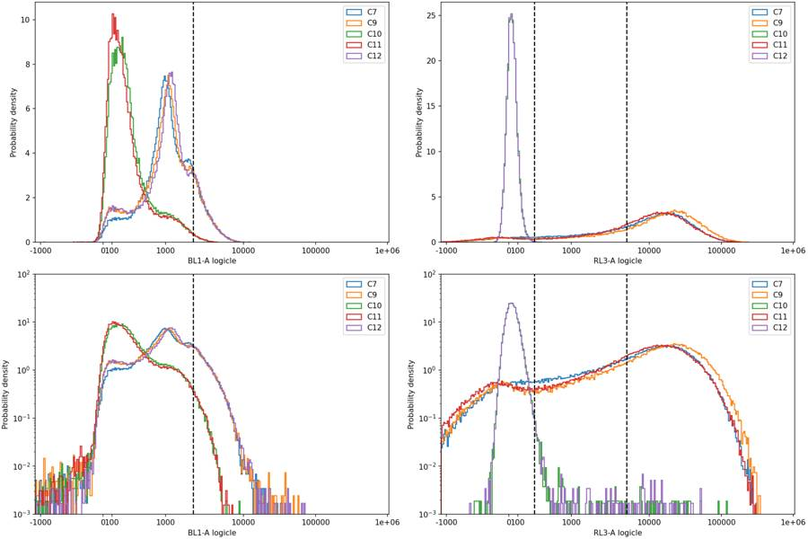
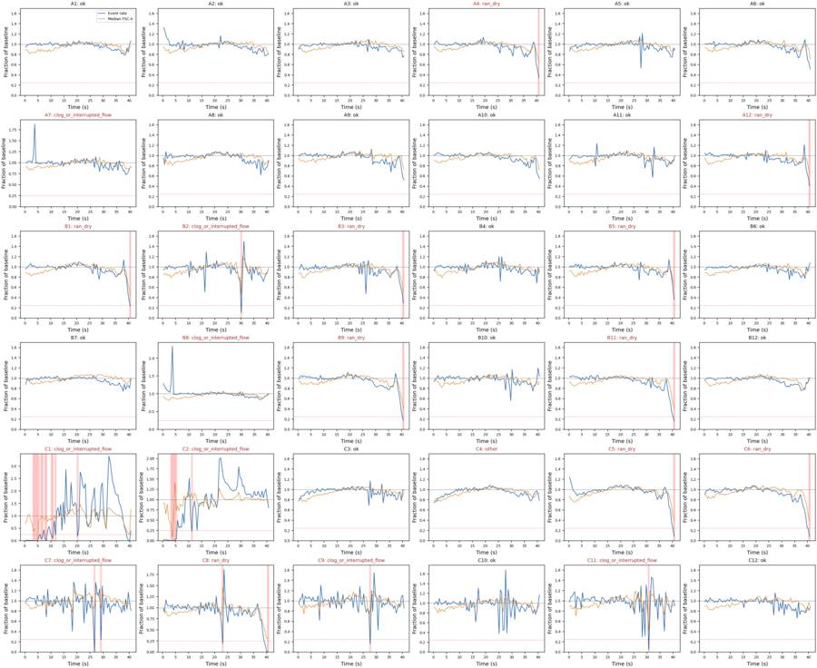
27
agent
The conservative whole-file QC screen flags 19 wells: 10 with terminal depletion, 8 with flow interruptions or clock resets, and C4 for GFP interference. C5–C6 have both depletion and GFP interference. C7–C9 all fail QC, so there is no usable fully stained no-virus comparison. I’m now checking that every reported count matches the saved XML.
tool call · exec
text(await tools.apply_patch("*** Begin Patch\n*** Add File: /task/outputs/validate_and_plot.py\n+\"\"\"Validate saved deliverables against freshly parsed GatingML and plot every well.\"\"\"\n+import json\n+import re\n+import hashlib\n+import importlib.metadata\n+import numpy as np\n+import pandas as pd\n+import flowkit as fk\n+import matplotlib\n+matplotlib.use('Agg')\n+import matplotlib.pyplot as plt\n+from matplotlib.patches import Polygon, Rectangle\n+from matplotlib.colors import LogNorm\n+from gate_plate import ROOT,OUT,POPULATIONS,PARENTS\n+\n+layout=pd.read_csv(ROOT/'inputs/plate_layout.csv')\n+counts=pd.read_csv(OUT/'counts.csv')\n+flags=pd.read_csv(OUT/'flags.csv')\n+strategy=fk.parse_gating_xml(str(OUT/'gates.xml'))\n+assert importlib.metadata.version('flowkit')=='1.2.3'\n+assert list(counts.columns)==['file','well','population','count','parent_population','pct_of_parent']\n+assert list(flags.columns)==['file','well','usable','reason_category','evidence']\n+assert len(counts)==180 and len(flags)==36 and len(layout)==36\n+assert counts['count'].dtype.kind in 'iu'\n+assert set(counts.file)==set(flags.file)==set(layout.file)\n+assert not counts.duplicated(['file','population']).any()\n+assert not flags.duplicated('file').any()\n+assert set(flags.usable)<=set(['yes','no'])\n+assert set(flags.reason_category)<=set(['ok','clog_or_interrupted_flow','ran_dry','too_few_events','saturation','bad_control','mislabeled_or_unexpected','other'])\n+assert ((flags.usable=='yes')==(flags.reason_category=='ok')).all()\n+assert flags.evidence.str.contains(r'\\d').all()\n+expected_paths=[('root',),('root','Cells'),('root','Cells','Single_Cells'),('root','Cells','Single_Cells','Live'),('root','Cells','Single_Cells')]\n+assert set(strategy.get_gate_ids())==set(zip(POPULATIONS,expected_paths))\n+assert len(strategy.comp_matrices)==0\n+shapes=[fk.gates.PolygonGate,fk.gates.PolygonGate,fk.gates.RectangleGate,fk.gates.RectangleGate,fk.gates.PolygonGate]\n+channels=[['FSC-A','SSC-A'],['SSC-H','SSC-A'],['BL1-A','RL3-A'],['BL1-A','RL3-A'],['BL1-A','RL3-A']]\n+for pop,shape,ch in zip(POPULATIONS,shapes,channels):\n+ gate=strategy.get_gate(pop)\n+ assert isinstance(gate,shape)\n+ assert [d.id for d in gate.dimensions]==ch\n+ assert all(d.compensation_ref=='uncompensated' for d in gate.dimensions)\n+ assert not strategy.is_custom_gate('anything',pop)\n+tr=strategy.transformations['Fluorescence_logicle']\n+tick_raw=np.array([-1000,0,1000,10000,100000,1000000])\n+tick=tr.apply(tick_raw)\n+figs={k:plt.subplots(6,6,figsize=(22,19),constrained_layout=True) for k in ['cells','singlets','fluorescence']}\n+verification=[]\n+total=0\n+for n,row in enumerate(layout.itertuples(index=False)):\n+ sample=fk.Sample(str(ROOT/'inputs/raw'/row.file))\n+ result=strategy.gate_sample(sample)\n+ e=sample.get_events(source='raw')\n+ d={ch:e[:,j] for j,ch in enumerate(sample.pnn_labels)}\n+ masks={'All_events':np.ones(sample.event_count,bool)}\n+ cs=counts[counts.file==row.file]\n+ assert cs.population.tolist()==POPULATIONS and cs.parent_population.tolist()==PARENTS\n+ assert set(cs.well)=={row.well}\n+ assert flags.loc[flags.file==row.file,'well'].item()==row.well\n+ for pop,parent in zip(POPULATIONS,PARENTS):\n+ mask=result.get_gate_membership(pop)\n+ assert not np.any(mask&~masks[parent])\n+ masks[pop]=mask\n+ observed=cs[cs.population==pop].iloc[0]\n+ actual=int(mask.sum()); parent_count=int(masks[parent].sum())\n+ assert actual==result.get_gate_count(pop)==observed['count']\n+ percentage=100*actual/parent_count if parent_count else 0.0\n+ assert abs(observed.pct_of_parent-percentage)<1e-10\n+ assert abs(result.get_gate_relative_percent(pop)-percentage)<1e-10\n+ sing=masks['Single_Cells'];b=d['BL1-A'];r=d['RL3-A']\n+ manual={'Live':sing&(r<300),'Caspase_pos':sing&(r<300)&(b>=2200),'Late_apoptosis':sing&(r>=5000)&(b>=2200)}\n+ for pop,mask in manual.items():assert np.array_equal(mask,masks[pop]),(row.well,pop)\n+ assert not np.any(masks['Live']&masks['Late_apoptosis'])\n+ neg=sing&(r<300)&((b<0)|(r<0))\n+ assert np.all(masks['Live'][neg])\n+ total+=sample.event_count\n+ verification.append(dict(well=row.well,total_events=sample.event_count,counts_match=True,ancestor_membership=True,raw_fluorescence_logic=True,negative_fluorescence_live_events=int(neg.sum())))\n+ f=flags.loc[flags.well==row.well].iloc[0]\n+ for kind,(fig,axs) in figs.items():\n+ ax=axs.flat[n]\n+ if kind=='cells':\n+ ax.hist2d(d['FSC-A'],d['SSC-A'],bins=100,range=[[0,1048576],[0,1048576]],norm=LogNorm(),cmap='viridis')\n+ ax.add_patch(Polygon(strategy.get_gate('Cells').vertices,fill=False,edgecolor='#ff624a',lw=1))\n+ ax.set(xlabel='FSC-A (raw)',ylabel='SSC-A (raw)')\n+ elif kind=='singlets':\n+ mask=masks['Cells']\n+ ax.hist2d(d['SSC-H'][mask],d['SSC-A'][mask],bins=100,range=[[0,1048576],[0,1048576]],norm=LogNorm(),cmap='viridis')\n+ ax.add_patch(Polygon(strategy.get_gate('Single_Cells').vertices,fill=False,edgecolor='#ff624a',lw=1))\n+ ax.set(xlabel='SSC-H (raw)',ylabel='SSC-A (raw)')\n+ else:\n+ xx=tr.apply(b[sing]); yy=tr.apply(r[sing])\n+ ax.hist2d(xx,yy,bins=100,range=[[-.12,1.03],[-.12,1.03]],norm=LogNorm(),cmap='viridis')\n+ live_max=strategy.get_gate('Live').dimensions[1].max\n+ cp_min=strategy.get_gate('Caspase_pos').dimensions[0].min\n+ ax.axhline(live_max,color='#57e664',lw=1)\n+ ax.plot([cp_min,cp_min],[-.12,live_max],color='#ffe059',lw=1)\n+ ax.add_patch(Polygon(strategy.get_gate('Late_apoptosis').vertices,fill=False,edgecolor='#ff624a',lw=1))\n+ ax.set(xlabel='BL1-A logicle',ylabel='RL3-A logicle',xticks=tick[[1,3,5]],xticklabels=['0','1e4','1e6'],yticks=tick[[1,3,5]],yticklabels=['0','1e4','1e6'],xlim=(-.12,1.03),ylim=(-.12
… [1,352 more characters not shown]tool output
Script completed
Wall time 1.2 seconds
Output:
{}
{"chunk_id":"0c6df6","wall_time_seconds":1.00127356,"session_id":52874,"original_token_count":0,"output":""}tool call · exec
text(await tools.apply_patch("*** Begin Patch\n*** Add File: /task/outputs/notes.md\n+One shared strategy was exported and reloaded with FlowKit 1.2.3. All 36 files, including flagged wells, were counted using the saved XML and complete ancestor chains. Exactly five gates use detector IDs and `compensation_ref=\"uncompensated\"`; no compensation, background subtraction, time filtering, or per-well gates were applied. Deviations from the supplied strategy: none. Fluorescence axes use logicle T=1,048,576, W=0.5, M=4.5, A=0. Thresholds below are in raw detector units; XML stores their transformed coordinates.\n+\n+- **Cells:** FSC-A × SSC-A polygon around the broad cell cloud. The left edge at FSC-A=70,000 removes the low-scatter peak near 30,000 at the shoulder before the larger-cell mode. SSC-A starts at 30,000, with sloping outer edges following the cloud. Upper edges at 1,000,000 exclude clipped scatter events. Debris and small cells overlap, so this is an operational morphology boundary. Exact vertices are in `gates.xml` and `gate_plate.py`.\n+- **Single_Cells:** SSC-H × SSC-A polygon enclosing the dense diagonal, approximately SSC-A/SSC-H=0.9–1.6 over the main cloud. Events with disproportionately high area are excluded. The same band was inspected across all wells.\n+- **Live:** rectangle with RL3-A <300 and unrestricted BL1-A. C11's low/bright distribution has a smoothed valley near 286; 300 retains 99.85% of C10 and 99.84% of C12 singlets. Lower fluorescence bounds are unbounded, retaining negative-valued events.\n+- **Caspase_pos:** rectangle within Live, BL1-A ≥2,200 and RL3-A <300. C12 is clearly shifted, but overlaps background. A conservative cutoff near the C10/C11 BL1-A 99th percentiles (2,180/2,214) leaves 0.97%/1.03% of their singlets positive, versus 14.75% in C12. This intentionally misses dim signal that cannot confidently be separated from background; the counts are threshold-defined, not a complete census of apoptosis.\n+- **Late_apoptosis:** sibling polygon under Single_Cells, BL1-A ≥2,200 and RL3-A ≥5,000. The latter lies on the lower shoulder of C11's bright mode (~14,650); RL3-A 300–5,000 remains intermediate. Upper polygon vertices correspond to 2,097,152 on both axes, beyond every recorded fluorescence value. Zombie-bright/BL1-negative events remain outside this population.\n+\n+Whole-file QC is conservative because counts cannot be repaired with an additional Time gate. Time is FlowKit's FCS-scaled seconds. Baselines are median event rate and median FSC-A in approximately 0.5-second bins from 5–30 s. Reject acquisition-clock resets or any interior bin (after 3 s, ending before 37 s) below 25% baseline rate. A terminal rate <50% baseline together with median FSC-A <75% baseline is flagged `ran_dry`, meaning depletion consistent with running dry. Lesser fluctuations are retained and quantified. All files exceed 10,000 total/1,000 singlet screening minima; none has ≥1% singlet fluorescence saturation. Metadata well IDs and detector settings agree with the layout.\n+\n+**19 wells are flagged:** 10 terminal-depletion, 8 interrupted-flow/reset, and C4 for GFP interference. C5–C6 also carry GFP interference; their primary category is `ran_dry`. All C4–C6 BL1-positive counts conflate GFP and CellEvent and cannot support caspase comparisons. C7–C9 all fail acquisition QC, leaving no usable fully stained no-virus comparison. C11 also fails whole-file acquisition QC, but its calibration distributions agree before/after interruption (Zombie-low 10.22%/10.52%; BL1 99th percentile 2,191/2,218). C10–C12 serve as staining references, not fully stained treatment comparisons. Quantified decisions, control checks, and inspected PNG plots accompany the deliverables; `validation.json` records complete count and hierarchy verification.\n*** End Patch"));
text(await tools.exec_command({cmd:"wc -w /task/outputs/notes.md\nhead -40 /task/outputs/gates.xml","max_output_tokens":3500}));
text(await tools.write_stdin({session_id:52874,chars:"","yield_time_ms":1000,"max_output_tokens":2200}));
tool output
Script completed
Wall time 0.0 seconds
Output:
{}
{"chunk_id":"c72f57","wall_time_seconds":0.000003,"exit_code":0,"original_token_count":461,"output":"508 /task/outputs/notes.md\n<?xml version='1.0' encoding='UTF-8'?>\n<gating:Gating-ML xmlns:gating=\"http://www.isac-net.org/std/Gating-ML/v2.0/gating\" xmlns:data-type=\"http://www.isac-net.org/std/Gating-ML/v2.0/datatypes\" xmlns:transforms=\"http://www.isac-net.org/std/Gating-ML/v2.0/transformations\">\n <transforms:transformation transforms:id=\"Fluorescence_logicle\">\n <transforms:logicle transforms:T=\"1048576\" transforms:W=\"0.5\" transforms:M=\"4.5\" transforms:A=\"0\"/>\n </transforms:transformation>\n <gating:PolygonGate gating:id=\"Cells\">\n <gating:dimension gating:compensation-ref=\"uncompensated\">\n <data-type:fcs-dimension data-type:name=\"FSC-A\"/>\n </gating:dimension>\n <gating:dimension gating:compensation-ref=\"uncompensated\">\n <data-type:fcs-dimension data-type:name=\"SSC-A\"/>\n </gating:dimension>\n <gating:vertex>\n <gating:coordinate data-type:value=\"70000\"/>\n <gating:coordinate data-type:value=\"30000\"/>\n </gating:vertex>\n <gating:vertex>\n <gating:coordinate data-type:value=\"150000\"/>\n <gating:coordinate data-type:value=\"30000\"/>\n </gating:vertex>\n <gating:vertex>\n <gating:coordinate data-type:value=\"800000\"/>\n <gating:coordinate data-type:value=\"160000\"/>\n </gating:vertex>\n <gating:vertex>\n <gating:coordinate data-type:value=\"1000000\"/>\n <gating:coordinate data-type:value=\"600000\"/>\n </gating:vertex>\n <gating:vertex>\n <gating:coordinate data-type:value=\"1000000\"/>\n <gating:coordinate data-type:value=\"1000000\"/>\n </gating:vertex>\n <gating:vertex>\n <gating:coordinate data-type:value=\"140000\"/>\n <gating:coordinate data-type:value=\"1000000\"/>\n </gating:vertex>\n <gating:vertex>\n <gating:coordinate data-type:value=\"70000\"/>\n <gating:coordinate data-type:value=\"420000\"/>\n </gating:vertex>\n"}
{"chunk_id":"3d33f7","wall_time_seconds":0.00000129,"exit_code":0,"original_token_count":214,"output":"A1 verified\nA2 verified\nA3 verified\nA4 verified\nA5 verified\nA6 verified\nA7 verified\nA8 verified\nA9 verified\nA10 verified\nA11 verified\nA12 verified\nB1 verified\nB2 verified\nB3 verified\nB4 verified\nB5 verified\nB6 verified\nB7 verified\nB8 verified\nB9 verified\nB10 verified\nB11 verified\nB12 verified\nC1 verified\nC2 verified\nC3 verified\nC4 verified\nC5 verified\nC6 verified\nC7 verified\nC8 verified\nC9 verified\nC10 verified\nC11 verified\nC12 verified\n{\n \"flowkit_version\": \"1.2.3\",\n \"files\": 36,\n \"total_events\": 9379064,\n \"gate_count\": 5,\n \"count_rows\": 180,\n \"flag_rows\": 36,\n \"usable_wells\": 17,\n \"flagged_wells\": 19,\n \"all_counts_recomputed_from_saved_xml\": true,\n \"all_ancestors_verified\": true,\n \"raw_fluorescence_logic_verified\": true,\n \"all_dimensions_uncompensated\": true,\n \"compensation_matrix_count\": 0,\n \"source_data_not_modified\": true\n}\n"}tool call · exec
const r=await Promise.allSettled([
tools.view_image({path:"/task/outputs/plots/final_fluorescence_gates.png"}),
tools.view_image({path:"/task/outputs/plots/final_cells_gates.png"}),
tools.view_image({path:"/task/outputs/plots/final_singlets_gates.png"})
]);for(const x of r){if(x.status==='fulfilled')image(x.value.image_url);else text(x);}
tool output
Script completed Wall time 0.1 seconds Output:
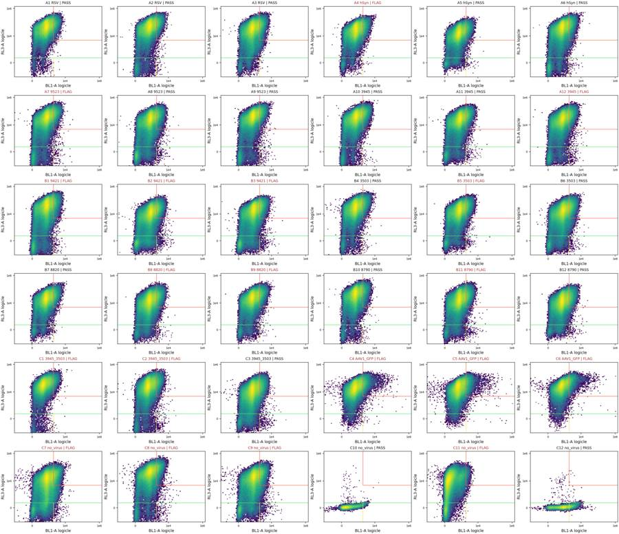
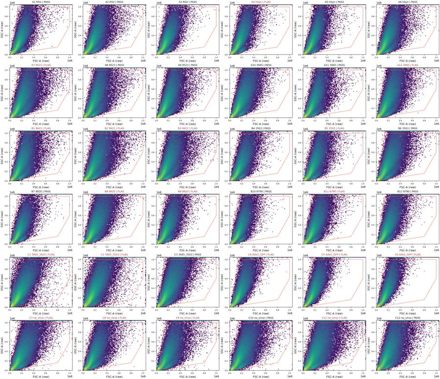
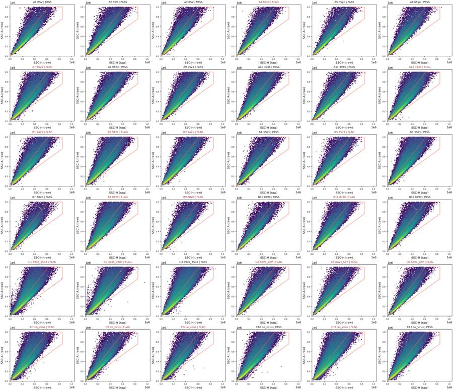
tool call · exec
text(await tools.apply_patch("*** Begin Patch\n*** Update File: /task/outputs/notes.md\n@@\n-One shared strategy was exported and reloaded with FlowKit 1.2.3. All 36 files, including flagged wells, were counted using the saved XML and complete ancestor chains. Exactly five gates use detector IDs and `compensation_ref=\"uncompensated\"`; no compensation, background subtraction, time filtering, or per-well gates were applied. Deviations from the supplied strategy: none. Fluorescence axes use logicle T=1,048,576, W=0.5, M=4.5, A=0. Thresholds below are in raw detector units; XML stores their transformed coordinates.\n+One shared strategy was exported/reloaded with FlowKit 1.2.3. All 36 files, including flagged wells, were counted from saved XML with complete ancestor chains. Five gates use detector IDs and `compensation_ref=\"uncompensated\"`; no compensation, subtraction, time filtering, or per-well gates. Deviations: none. Fluorescence uses logicle T=1,048,576, W=0.5, M=4.5, A=0. Thresholds below are raw units; XML stores transformed coordinates.\n@@\n-- **Cells:** FSC-A × SSC-A polygon around the broad cell cloud. The left edge at FSC-A=70,000 removes the low-scatter peak near 30,000 at the shoulder before the larger-cell mode. SSC-A starts at 30,000, with sloping outer edges following the cloud. Upper edges at 1,000,000 exclude clipped scatter events. Debris and small cells overlap, so this is an operational morphology boundary. Exact vertices are in `gates.xml` and `gate_plate.py`.\n+- **Cells:** FSC-A × SSC-A polygon around the cell cloud. FSC-A=70,000 removes the low-scatter peak near 30,000 at the shoulder before the larger-cell mode. SSC-A starts at 30,000; sloping edges follow the cloud. Upper edges at 1,000,000 exclude clipped scatter. Debris and small cells overlap: this is an operational boundary. Exact vertices are in `gates.xml` and `gate_plate.py`.\n@@\n-- **Caspase_pos:** rectangle within Live, BL1-A ≥2,200 and RL3-A <300. C12 is clearly shifted, but overlaps background. A conservative cutoff near the C10/C11 BL1-A 99th percentiles (2,180/2,214) leaves 0.97%/1.03% of their singlets positive, versus 14.75% in C12. This intentionally misses dim signal that cannot confidently be separated from background; the counts are threshold-defined, not a complete census of apoptosis.\n+- **Caspase_pos:** rectangle within Live, BL1-A ≥2,200 and RL3-A <300. C12 is shifted but overlaps background. The cutoff near C10/C11's BL1-A 99th percentiles (2,180/2,214) leaves 0.97%/1.03% of their singlets positive, versus 14.75% in C12. This conservative threshold misses dim signal indistinguishable from background; counts are not a complete census of apoptosis.\n@@\n-Whole-file QC is conservative because counts cannot be repaired with an additional Time gate. Time is FlowKit's FCS-scaled seconds. Baselines are median event rate and median FSC-A in approximately 0.5-second bins from 5–30 s. Reject acquisition-clock resets or any interior bin (after 3 s, ending before 37 s) below 25% baseline rate. A terminal rate <50% baseline together with median FSC-A <75% baseline is flagged `ran_dry`, meaning depletion consistent with running dry. Lesser fluctuations are retained and quantified. All files exceed 10,000 total/1,000 singlet screening minima; none has ≥1% singlet fluorescence saturation. Metadata well IDs and detector settings agree with the layout.\n+Whole-file QC is conservative because an additional Time gate is unavailable. Time is FlowKit's FCS-scaled seconds. Baselines are median event rate and median FSC-A in approximately 0.5-second bins from 5–30 s. Reject clock resets or any interior bin (after 3 s, ending before 37 s) below 25% baseline rate. Terminal rate <50% baseline plus median FSC-A <75% baseline is flagged `ran_dry`: depletion consistent with running dry. Lesser fluctuations are retained and quantified. All files exceed 10,000 total/1,000 singlet screening minima; none has ≥1% singlet fluorescence saturation. Well IDs/settings match.\n@@\n-**19 wells are flagged:** 10 terminal-depletion, 8 interrupted-flow/reset, and C4 for GFP interference. C5–C6 also carry GFP interference; their primary category is `ran_dry`. All C4–C6 BL1-positive counts conflate GFP and CellEvent and cannot support caspase comparisons. C7–C9 all fail acquisition QC, leaving no usable fully stained no-virus comparison. C11 also fails whole-file acquisition QC, but its calibration distributions agree before/after interruption (Zombie-low 10.22%/10.52%; BL1 99th percentile 2,191/2,218). C10–C12 serve as staining references, not fully stained treatment comparisons. Quantified decisions, control checks, and inspected PNG plots accompany the deliverables; `validation.json` records complete count and hierarchy verification.\n+**19 wells are flagged:** 10 terminal-depletion, 8 interrupted-flow/reset, and C4 for GFP interference. C5–C6 also have GFP interference; their primary category is `ran_dry`. C4–C6 BL1-positive counts conflate GFP and CellEvent. C7–C9 all fail acquisition QC, leaving no usable fully stained no-virus comparison. C11 fails whole-file QC, but calibration distributions agree before/after interruption (Zombie-low 10.22%/10.52%; BL1 99th percentile 2,191/2,218). C10–C12 are staining references. Quantified decisions, control checks, inspected PNGs, and `validation.json` accompany the deliverables.\n*** End Patch"));
text(await tools.exec_command({cmd:"wc -w /task/outputs/notes.md\nls -lh /task/outputs/gates.xml /task/outputs/counts.csv /task/outputs/flags.csv /task/outputs/notes.md\npython - <<'PY'\nfrom pathlib import Path\nimport json,hashlib,pandas as pd\nout=Path('/task/outputs'); v=json.loads((out/'validation.json').read_text())\nfor name,h in v['sha256'].items():\n assert hashlib.sha256((out/name).read_bytes()).hexdigest()==h\nprint('Validated deliverables unchanged after full verification.')\nfor name in ['counts.csv','flags.csv']:\n d=pd.read_csv(out/name);print(name,len(d),'rows; missing value
… [65 more characters not shown]tool output
Script completed
Wall time 0.3 seconds
Output:
{}
{"chunk_id":"95d26a","wall_time_seconds":0.110640407,"exit_code":0,"original_token_count":106,"output":"440 /task/outputs/notes.md\n-rw-r--r-- 1 root root 17K Nov 10 17:25 /task/outputs/counts.csv\n-rw-r--r-- 1 root root 11K Nov 10 17:27 /task/outputs/flags.csv\n-rw-r--r-- 1 root root 5.1K Nov 10 17:25 /task/outputs/gates.xml\n-rw-r--r-- 1 root root 3.2K Nov 10 17:31 /task/outputs/notes.md\nValidated deliverables unchanged after full verification.\ncounts.csv 180 rows; missing values: 0\nflags.csv 36 rows; missing values: 0\n"}31
agent
Created and validated all deliverables:
- [gates.xml](/task/outputs/gates.xml)
- [counts.csv](/task/outputs/counts.csv) — 180 rows
- [flags.csv](/task/outputs/flags.csv) — 36 quantified decisions
- [notes.md](/task/outputs/notes.md)
All counts match the reloaded XML, including full ancestry.
**19 wells flagged; 17 pass** the documented QC criteria. GFP confounds C4–C6 caspase counts, and C7–C9 all fail acquisition QC, leaving no usable fully stained no-virus comparison.